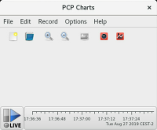
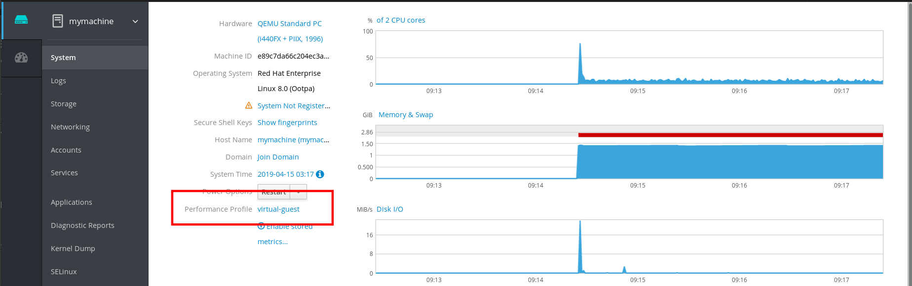
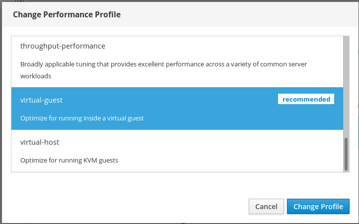

Monitoring and managing system status and performance
Optimizing system throughput, latency, and power consumption
Abstract
Providing feedback on Red Hat documentation
We appreciate your input on our documentation. Please let us know how we could make it better. To do so:
For simple comments on specific passages:
- Make sure you are viewing the documentation in the Multi-page HTML format. In addition, ensure you see the Feedback button in the upper right corner of the document.
- Use your mouse cursor to highlight the part of text that you want to comment on.
- Click the Add Feedback pop-up that appears below the highlighted text.
- Follow the displayed instructions.
For submitting more complex feedback, create a Bugzilla ticket:
- Go to the Bugzilla website.
- As the Component, use Documentation.
- Fill in the Description field with your suggestion for improvement. Include a link to the relevant part(s) of documentation.
- Click Submit Bug.
Chapter 1. Getting started with Tuned
As a system administrator, you can use the Tuned application to optimize the performance profile of your system for a variety of use cases.
1.1. The purpose of Tuned
Tuned is a service that monitors your system and optimizes the performance under certain workloads. The core of Tuned are profiles, which tune your system for different use cases.
Tuned is distributed with a number of predefined profiles for use cases such as:
- High throughput
- Low latency
- Saving power
It is possible to modify the rules defined for each profile and customize how to tune a particular device. When you switch to another profile or deactivate Tuned, all changes made to the system settings by the previous profile revert back to their original state.
You can also configure Tuned to react to changes in device usage and adjusts settings to improve performance of active devices and reduce power consumption of inactive devices.
1.2. Tuned profiles
A detailed analysis of a system can be very time-consuming. Tuned provides a number of predefined profiles for typical use cases. You can also create, modify, and delete profiles.
The profiles provided with Tuned are divided into the following categories:
- Power-saving profiles
- Performance-boosting profiles
The performance-boosting profiles include profiles that focus on the following aspects:
- Low latency for storage and network
- High throughput for storage and network
- Virtual machine performance
- Virtualization host performance
The default profile
During the installation, the best profile for your system is selected automatically. Currently, the default profile is selected according to the following customizable rules:
| Environment | Default profile | Goal |
|---|---|---|
| Compute nodes |
| The best throughput performance |
| Virtual machines |
|
The best performance. If you are not interested in the best performance, you can change it to the |
| Other cases |
| Balanced performance and power consumption |
Merged profiles
As an experimental feature, it is possible to select more profiles at once. Tuned will try to merge them during the load.
If there are conflicts, the settings from the last specified profile takes precedence.
Example 1.1. Low power consumption in a virtual guest
The following example optimizes the system to run in a virtual machine for the best performance and concurrently tunes it for low power consumption, while the low power consumption is the priority:
# tuned-adm profile virtual-guest powersave
Merging is done automatically without checking whether the resulting combination of parameters makes sense. Consequently, the feature might tune some parameters the opposite way, which might be counterproductive: for example, setting the disk for high throughput by using the throughput-performance profile and concurrently setting the disk spindown to the low value by the spindown-disk profile.
The location of profiles
Tuned stores profiles in the following directories:
/usr/lib/tuned/-
Distribution-specific profiles are stored in the directory. Each profile has its own directory. The profile consists of the main configuration file called
tuned.conf, and optionally other files, for example helper scripts. /etc/tuned/-
If you need to customize a profile, copy the profile directory into the directory, which is used for custom profiles. If there are two profiles of the same name, the custom profile located in
/etc/tuned/is used.
The syntax of profile configuration
The tuned.conf file can contain one [main] section and other sections for configuring plug-in instances. However, all sections are optional.
Lines starting with the hash sign (#) are comments.
Additional resources
-
The
tuned.conf(5)man page.
1.3. Tuned profiles distributed with RHEL
The following is a list of profiles that are installed with Tuned on Red Hat Enterprise Linux.
There might be more product-specific or third-party Tuned profiles available. Such profiles are usually provided by separate RPM packages.
balanced-
The default power-saving profile. It is intended to be a compromise between performance and power consumption. It uses auto-scaling and auto-tuning whenever possible. The only drawback is the increased latency. In the current Tuned release, it enables the CPU, disk, audio, and video plugins, and activates the
conservativeCPU governor. Theradeon_powersaveoption uses thedpm-balancedvalue if it is supported, otherwise it is set toauto. powersaveA profile for maximum power saving performance. It can throttle the performance in order to minimize the actual power consumption. In the current Tuned release it enables USB autosuspend, WiFi power saving, and Aggressive Link Power Management (ALPM) power savings for SATA host adapters. It also schedules multi-core power savings for systems with a low wakeup rate and activates the
ondemandgovernor. It enables AC97 audio power saving or, depending on your system, HDA-Intel power savings with a 10 seconds timeout. If your system contains a supported Radeon graphics card with enabled KMS, the profile configures it to automatic power saving. On ASUS Eee PCs, a dynamic Super Hybrid Engine is enabled.NoteIn certain cases, the
balancedprofile is more efficient compared to thepowersaveprofile.Consider there is a defined amount of work that needs to be done, for example a video file that needs to be transcoded. Your machine might consume less energy if the transcoding is done on the full power, because the task is finished quickly, the machine starts to idle, and it can automatically step-down to very efficient power save modes. On the other hand, if you transcode the file with a throttled machine, the machine consumes less power during the transcoding, but the process takes longer and the overall consumed energy can be higher.
That is why the
balancedprofile can be generally a better option.throughput-performance-
A server profile optimized for high throughput. It disables power savings mechanisms and enables
sysctlsettings that improve the throughput performance of the disk and network IO. CPU governor is set toperformance. latency-performance-
A server profile optimized for low latency. It disables power savings mechanisms and enables
sysctlsettings that improve latency. CPU governor is set toperformanceand the CPU is locked to the low C states (by PM QoS). network-latency-
A profile for low latency network tuning. It is based on the
latency-performanceprofile. It additionally disables transparent huge pages and NUMA balancing, and tunes several other network-relatedsysctlparameters. network-throughput-
A profile for throughput network tuning. It is based on the
throughput-performanceprofile. It additionally increases kernel network buffers. virtual-guest-
A profile designed for virtual guests based on the
throughput-performanceprofile that, among other tasks, decreases virtual memory swappiness and increases disk readahead values. It does not disable disk barriers. virtual-host-
A profile designed for virtual hosts based on the
throughput-performanceprofile that, among other tasks, decreases virtual memory swappiness, increases disk readahead values, and enables a more aggressive value of dirty pages writeback. oracle-
A profile optimized for Oracle databases loads based on
throughput-performanceprofile. It additionally disables transparent huge pages and modifies other performance-related kernel parameters. This profile is provided by thetuned-profiles-oraclepackage. desktop-
A profile optimized for desktops, based on the
balancedprofile. It additionally enables scheduler autogroups for better response of interactive applications. cpu-partitioningThe
cpu-partitioningprofile partitions the system CPUs into isolated and housekeeping CPUs. To reduce jitter and interruptions on an isolated CPU, the profile clears the isolated CPU from user-space processes, movable kernel threads, interrupt handlers, and kernel timers.A housekeeping CPU can run all services, shell processes, and kernel threads.
You can configure the
cpu-partitioningprofile in/etc/tuned/cpu-partitioning-variables.conffile. The configuration options are:isolated_cores=cpu-list-
Lists CPUs to isolate. The list of isolated CPUs is comma-separated or the user can specify the range. You can specify a range using a dash, such as
3-5. This option is mandatory. Any CPU missing from this list is automatically considered a housekeeping CPU. no_balance_cores=cpu-list-
Lists CPUs which are not considered by the kernel during system wide process load-balancing. This option is optional. This is usually the same list as
isolated_cores.
For more information on
cpu-partitioning, see thetuned-profiles-cpu-partitioning(7)man page.
Real-time profiles
Real-time profiles are intended for systems running the real-time kernel. Without a special kernel build, they do not configure the system to be real-time. On RHEL, the profiles are available from additional repositories.
The following real-time profiles are available:
realtimeUse on bare-metal real-time systems.
Provided by the
tuned-profiles-realtimepackage, which is available from the RT or NFV repositories.realtime-virtual-hostUse in a virtualization host configured for real-time.
Provided by the
tuned-profiles-nfv-hostpackage, which is available from the NFV repository.realtime-virtual-guestUse in a virtualization guest configured for real-time.
Provided by the
tuned-profiles-nfv-guestpackage, which is available from the NFV repository.
1.4. Static and dynamic tuning in Tuned
This section explains the difference between the two categories of system tuning that Tuned applies: static and dynamic.
- Static tuning
-
Mainly consists of the application of predefined
sysctlandsysfssettings and one-shot activation of several configuration tools such asethtool. - Dynamic tuning
Watches how various system components are used throughout the uptime of your system. Tuned adjusts system settings dynamically based on that monitoring information.
For example, the hard drive is used heavily during startup and login, but is barely used later when the user might mainly work with applications such as web browsers or email clients. Similarly, the CPU and network devices are used differently at different times. Tuned monitors the activity of these components and reacts to the changes in their use.
By default, dynamic tuning is disabled. To enable it, edit the
/etc/tuned/tuned-main.conffile and change thedynamic_tuningoption to1. Tuned then periodically analyzes system statistics and uses them to update your system tuning settings. To configure the time interval in seconds between these updates, use theupdate_intervaloption.Currently implemented dynamic tuning algorithms try to balance the performance and powersave, and are therefore disabled in the performance profiles. Dynamic tuning for individual plug-ins can be enabled or disabled in the Tuned profiles.
Example 1.2. Static and dynamic tuning on a workstation
On a typical office workstation, the Ethernet network interface is inactive most of the time. Only a few emails go in and out or some web pages might be loaded.
For those kinds of loads, the network interface does not have to run at full speed all the time, as it does by default. Tuned has a monitoring and tuning plug-in for network devices that can detect this low activity and then automatically lower the speed of that interface, typically resulting in a lower power usage.
If the activity on the interface increases for a longer period of time, for example because a DVD image is being downloaded or an email with a large attachment is opened, Tuned detects this and sets the interface speed to maximum to offer the best performance while the activity level is high.
This principle is used for other plug-ins for CPU and disks as well.
1.5. Tuned no-daemon mode
You can run Tuned in no-daemon mode, which does not require any resident memory. In this mode, Tuned applies the settings and exits.
By default, no-daemon mode is disabled because a lot of Tuned functionality is missing in this mode, including:
- D-Bus support
- Hot-plug support
- Rollback support for settings
To enable no-daemon mode, include the following line in the /etc/tuned/tuned-main.conf file:
daemon = 0
1.6. Installing and enabling Tuned
This procedure installs and enables the Tuned application, installs Tuned profiles, and presets a default Tuned profile for your system.
Procedure
Install the
tunedpackage:# yum install tuned
Enable and start the
tunedservice:# systemctl enable --now tuned
Optionally, install Tuned profiles for real-time systems:
# yum install tuned-profiles-realtime tuned-profiles-nfv
Verify that a Tuned profile is active and applied:
$ tuned-adm active Current active profile: balanced$ tuned-adm verify Verfication succeeded, current system settings match the preset profile. See tuned log file ('/var/log/tuned/tuned.log') for details.
1.7. Listing available Tuned profiles
This procedure lists all Tuned profiles that are currently available on your system.
Procedure
To list all available Tuned profiles on your system, use:
$ tuned-adm list Available profiles: - balanced - General non-specialized tuned profile - desktop - Optimize for the desktop use-case - latency-performance - Optimize for deterministic performance at the cost of increased power consumption - network-latency - Optimize for deterministic performance at the cost of increased power consumption, focused on low latency network performance - network-throughput - Optimize for streaming network throughput, generally only necessary on older CPUs or 40G+ networks - powersave - Optimize for low power consumption - throughput-performance - Broadly applicable tuning that provides excellent performance across a variety of common server workloads - virtual-guest - Optimize for running inside a virtual guest - virtual-host - Optimize for running KVM guests Current active profile: balanced
To display only the currently active profile, use:
$ tuned-adm active Current active profile: balanced
Additional resources
-
The
tuned-adm(8)man page.
1.8. Setting a Tuned profile
This procedure activates a selected Tuned profile on your system.
Prerequisites
-
The
tunedservice is running. See Section 1.6, “Installing and enabling Tuned” for details.
Procedure
Optionally, you can let Tuned recommend the most suitable profile for your system:
# tuned-adm recommend balancedActivate a profile:
# tuned-adm profile selected-profileAlternatively, you can activate a combination of multiple profiles:
# tuned-adm profile profile1 profile2
Example 1.3. A virtual machine optimized for low power consumption
The following example optimizes the system to run in a virtual machine with the best performance and concurrently tunes it for low power consumption, while the low power consumption is the priority:
# tuned-adm profile virtual-guest powersave
Verify that the Tuned profile is active and applied:
$ tuned-adm active Current active profile: selected-profile$ tuned-adm verify Verfication succeeded, current system settings match the preset profile. See tuned log file ('/var/log/tuned/tuned.log') for details.
Additional resources
-
The
tuned-adm(8)man page
1.9. Disabling Tuned
This procedure disables Tuned and resets all affected system settings to their original state before Tuned modified them.
Procedure
To disable all tunings temporarily:
# tuned-adm off
The tunings are applied again after the
tunedservice restarts.Alternatively, to stop and disable the
tunedservice permanently:# systemctl disable --now tuned
Additional resources
-
The
tuned-adm(8)man page.
Chapter 2. Customizing Tuned profiles
You can create or modify Tuned profiles to optimize system performance for your intended use case.
Prerequisites
- Install and enable Tuned as described in Section 1.6, “Installing and enabling Tuned”.
2.1. Tuned profiles
A detailed analysis of a system can be very time-consuming. Tuned provides a number of predefined profiles for typical use cases. You can also create, modify, and delete profiles.
The profiles provided with Tuned are divided into the following categories:
- Power-saving profiles
- Performance-boosting profiles
The performance-boosting profiles include profiles that focus on the following aspects:
- Low latency for storage and network
- High throughput for storage and network
- Virtual machine performance
- Virtualization host performance
The default profile
During the installation, the best profile for your system is selected automatically. Currently, the default profile is selected according to the following customizable rules:
| Environment | Default profile | Goal |
|---|---|---|
| Compute nodes |
| The best throughput performance |
| Virtual machines |
|
The best performance. If you are not interested in the best performance, you can change it to the |
| Other cases |
| Balanced performance and power consumption |
Merged profiles
As an experimental feature, it is possible to select more profiles at once. Tuned will try to merge them during the load.
If there are conflicts, the settings from the last specified profile takes precedence.
Example 2.1. Low power consumption in a virtual guest
The following example optimizes the system to run in a virtual machine for the best performance and concurrently tunes it for low power consumption, while the low power consumption is the priority:
# tuned-adm profile virtual-guest powersave
Merging is done automatically without checking whether the resulting combination of parameters makes sense. Consequently, the feature might tune some parameters the opposite way, which might be counterproductive: for example, setting the disk for high throughput by using the throughput-performance profile and concurrently setting the disk spindown to the low value by the spindown-disk profile.
The location of profiles
Tuned stores profiles in the following directories:
/usr/lib/tuned/-
Distribution-specific profiles are stored in the directory. Each profile has its own directory. The profile consists of the main configuration file called
tuned.conf, and optionally other files, for example helper scripts. /etc/tuned/-
If you need to customize a profile, copy the profile directory into the directory, which is used for custom profiles. If there are two profiles of the same name, the custom profile located in
/etc/tuned/is used.
The syntax of profile configuration
The tuned.conf file can contain one [main] section and other sections for configuring plug-in instances. However, all sections are optional.
Lines starting with the hash sign (#) are comments.
Additional resources
-
The
tuned.conf(5)man page.
2.2. Inheritance between Tuned profiles
Tuned profiles can be based on other profiles and modify only certain aspects of their parent profile.
The [main] section of Tuned profiles recognizes the include option:
[main]
include=parentAll settings from the parent profile are loaded in this child profile. In the following sections, the child profile can override certain settings inherited from the parent profile or add new settings not present in the parent profile.
You can create your own child profile in the /etc/tuned/ directory based on a pre-installed profile in /usr/lib/tuned/ with only some parameters adjusted.
If the parent profile is updated, such as after a Tuned upgrade, the changes are reflected in the child profile.
Example 2.2. A power-saving profile based on balanced
The following is an example of a custom profile that extends the balanced profile and sets Aggressive Link Power Management (ALPM) for all devices to the maximum powersaving.
[main] include=balanced [scsi_host] alpm=min_power
Additional resources
-
The
tuned.conf(5)man page
2.3. Static and dynamic tuning in Tuned
This section explains the difference between the two categories of system tuning that Tuned applies: static and dynamic.
- Static tuning
-
Mainly consists of the application of predefined
sysctlandsysfssettings and one-shot activation of several configuration tools such asethtool. - Dynamic tuning
Watches how various system components are used throughout the uptime of your system. Tuned adjusts system settings dynamically based on that monitoring information.
For example, the hard drive is used heavily during startup and login, but is barely used later when the user might mainly work with applications such as web browsers or email clients. Similarly, the CPU and network devices are used differently at different times. Tuned monitors the activity of these components and reacts to the changes in their use.
By default, dynamic tuning is disabled. To enable it, edit the
/etc/tuned/tuned-main.conffile and change thedynamic_tuningoption to1. Tuned then periodically analyzes system statistics and uses them to update your system tuning settings. To configure the time interval in seconds between these updates, use theupdate_intervaloption.Currently implemented dynamic tuning algorithms try to balance the performance and powersave, and are therefore disabled in the performance profiles. Dynamic tuning for individual plug-ins can be enabled or disabled in the Tuned profiles.
Example 2.3. Static and dynamic tuning on a workstation
On a typical office workstation, the Ethernet network interface is inactive most of the time. Only a few emails go in and out or some web pages might be loaded.
For those kinds of loads, the network interface does not have to run at full speed all the time, as it does by default. Tuned has a monitoring and tuning plug-in for network devices that can detect this low activity and then automatically lower the speed of that interface, typically resulting in a lower power usage.
If the activity on the interface increases for a longer period of time, for example because a DVD image is being downloaded or an email with a large attachment is opened, Tuned detects this and sets the interface speed to maximum to offer the best performance while the activity level is high.
This principle is used for other plug-ins for CPU and disks as well.
2.4. Tuned plug-ins
Plug-ins are modules in Tuned profiles that Tuned uses to monitor or optimize different devices on the system.
Tuned uses two types of plug-ins:
- monitoring plug-ins
- tuning plug-ins
Monitoring plug-ins
Monitoring plug-ins are used to get information from a running system. The output of the monitoring plug-ins can be used by tuning plug-ins for dynamic tuning.
Monitoring plug-ins are automatically instantiated whenever their metrics are needed by any of the enabled tuning plug-ins. If two tuning plug-ins require the same data, only one instance of the monitoring plug-in is created and the data is shared.
Tuning plug-ins
Each tuning plug-in tunes an individual subsystem and takes several parameters that are populated from the tuned profiles. Each subsystem can have multiple devices, such as multiple CPUs or network cards, that are handled by individual instances of the tuning plug-ins. Specific settings for individual devices are also supported.
Syntax for plug-ins in Tuned profiles
Sections describing plug-in instances are formatted in the following way:
[NAME] type=TYPE devices=DEVICES
- NAME
- is the name of the plug-in instance as it is used in the logs. It can be an arbitrary string.
- TYPE
- is the type of the tuning plug-in.
- DEVICES
is the list of devices that this plug-in instance handles.
The
devicesline can contain a list, a wildcard (*), and negation (!). If there is nodevicesline, all devices present or later attached on the system of the TYPE are handled by the plug-in instance. This is same as using thedevices=*option.Example 2.4. Matching block devices with a plug-in
The following example matches all block devices starting with
sd, such assdaorsdb, and does not disable barriers on them:[data_disk] type=disk devices=sd* disable_barriers=false
The following example matches all block devices except
sda1andsda2:[data_disk] type=disk devices=!sda1, !sda2 disable_barriers=false
If no instance of a plug-in is specified, the plug-in is not enabled.
If the plug-in supports more options, they can be also specified in the plug-in section. If the option is not specified and it was not previously specified in the included plug-in, the default value is used.
Short plug-in syntax
If you do not need custom names for the plug-in instance and there is only one definition of the instance in your configuration file, Tuned supports the following short syntax:
[TYPE] devices=DEVICES
In this case, it is possible to omit the type line. The instance is then referred to with a name, same as the type. The previous example could be then rewritten into:
Example 2.5. Matching block devices using the short syntax
[disk] devices=sdb* disable_barriers=false
Conflicting plug-in definitions in a profile
If the same section is specified more than once using the include option, the settings are merged. If they cannot be merged due to a conflict, the last conflicting definition overrides the previous settings. If you do not know what was previously defined, you can use the replace Boolean option and set it to true. This causes all the previous definitions with the same name to be overwritten and the merge does not happen.
You can also disable the plug-in by specifying the enabled=false option. This has the same effect as if the instance was never defined. Disabling the plug-in is useful if you are redefining the previous definition from the include option and do not want the plug-in to be active in your custom profile.
Functionality not implemented in any plug-in
Tuned includes the ability to run any shell command as part of enabling or disabling a tuning profile. This enables you to extend Tuned profiles with functionality that has not been integrated into Tuned yet.
You can specify arbitrary shell commands using the script plug-in.
Additional resources
-
The
tuned.conf(5)man page
2.5. Available Tuned plug-ins
This section lists all monitoring and tuning plug-ins currently available in Tuned.
Monitoring plug-ins
Currently, the following monitoring plug-ins are implemented:
disk- Gets disk load (number of IO operations) per device and measurement interval.
net- Gets network load (number of transferred packets) per network card and measurement interval.
load- Gets CPU load per CPU and measurement interval.
Tuning plug-ins
Currently, the following tuning plug-ins are implemented. Only some of these plug-ins implement dynamic tuning. Options supported by plug-ins are also listed:
cpuSets the CPU governor to the value specified by the
governoroption and dynamically changes the Power Management Quality of Service (PM QoS) CPU Direct Memory Access (DMA) latency according to the CPU load.If the CPU load is lower than the value specified by the
load_thresholdoption, the latency is set to the value specified by thelatency_highoption, otherwise it is set to the value specified bylatency_low.You can also force the latency to a specific value and prevent it from dynamically changing further. To do so, set the
force_latencyoption to the required latency value.eeepc_sheDynamically sets the front-side bus (FSB) speed according to the CPU load.
This feature can be found on some netbooks and is also known as the ASUS Super Hybrid Engine (SHE).
If the CPU load is lower or equal to the value specified by the
load_threshold_powersaveoption, the plug-in sets the FSB speed to the value specified by theshe_powersaveoption. If the CPU load is higher or equal to the value specified by theload_threshold_normaloption, it sets the FSB speed to the value specified by theshe_normaloption.Static tuning is not supported and the plug-in is transparently disabled if Tuned does not detect the hardware support for this feature.
net-
Configures the Wake-on-LAN functionality to the values specified by the
wake_on_lanoption. It uses the same syntax as theethtoolutility. It also dynamically changes the interface speed according to the interface utilization. sysctlSets various
sysctlsettings specified by the plug-in options.The syntax is
name=value, where name is the same as the name provided by thesysctlutility.Use the
sysctlplug-in if you need to change system settings that are not covered by other plug-ins available in Tuned. If the settings are covered by some specific plug-ins, prefer these plug-ins.usbSets autosuspend timeout of USB devices to the value specified by the
autosuspendparameter.The value
0means that autosuspend is disabled.vm-
Enables or disables transparent huge pages depending on the Boolean value of the
transparent_hugepagesoption. audioSets the autosuspend timeout for audio codecs to the value specified by the
timeoutoption.Currently, the
snd_hda_intelandsnd_ac97_codeccodecs are supported. The value0means that the autosuspend is disabled. You can also enforce the controller reset by setting the Boolean optionreset_controllertotrue.diskSets the disk elevator to the value specified by the
elevatoroption.It also sets:
-
APM to the value specified by the
apmoption -
Scheduler quantum to the value specified by the
scheduler_quantumoption -
Disk spindown timeout to the value specified by the
spindownoption -
Disk readahead to the value specified by the
readaheadparameter -
The current disk readahead to a value multiplied by the constant specified by the
readahead_multiplyoption
In addition, this plug-in dynamically changes the advanced power management and spindown timeout setting for the drive according to the current drive utilization. The dynamic tuning can be controlled by the Boolean option
dynamicand is enabled by default.-
APM to the value specified by the
scsi_hostTunes options for SCSI hosts.
It sets Aggressive Link Power Management (ALPM) to the value specified by the
alpmoption.mounts-
Enables or disables barriers for mounts according to the Boolean value of the
disable_barriersoption. scriptExecutes an external script or binary when the profile is loaded or unloaded. You can choose an arbitrary executable.
ImportantThe
scriptplug-in is provided mainly for compatibility with earlier releases. Prefer other Tuned plug-ins if they cover the required functionality.Tuned calls the executable with one of the following arguments:
-
startwhen loading the profile -
stopwhen unloading the profile
You need to correctly implement the
stopaction in your executable and revert all settings that you changed during thestartaction. Otherwise, the roll-back step after changing your Tuned profile will not work.Bash scripts can import the
/usr/lib/tuned/functionsBash library and use the functions defined there. Use these functions only for functionality that is not natively provided by Tuned. If a function name starts with an underscore, such as_wifi_set_power_level, consider the function private and do not use it in your scripts, because it might change in the future.Specify the path to the executable using the
scriptparameter in the plug-in configuration.Example 2.6. Running a Bash script from a profile
To run a Bash script named
script.shthat is located in the profile directory, use:[script] script=${i:PROFILE_DIR}/script.sh-
sysfsSets various
sysfssettings specified by the plug-in options.The syntax is
name=value, where name is thesysfspath to use.Use this plugin in case you need to change some settings that are not covered by other plug-ins. Prefer specific plug-ins if they cover the required settings.
videoSets various powersave levels on video cards. Currently, only the Radeon cards are supported.
The powersave level can be specified by using the
radeon_powersaveoption. Supported values are:-
default -
auto -
low -
mid -
high -
dynpm -
dpm-battery -
dpm-balanced -
dpm-perfomance
For details, see www.x.org. Note that this plug-in is experimental and the option might change in future releases.
-
bootloaderAdds options to the kernel command line. This plug-in supports only the GRUB 2 boot loader.
Customized non-standard location of the GRUB 2 configuration file can be specified by the
grub2_cfg_fileoption.The kernel options are added to the current GRUB configuration and its templates. The system needs to be rebooted for the kernel options to take effect.
Switching to another profile or manually stopping the
tunedservice removes the additional options. If you shut down or reboot the system, the kernel options persist in thegrub.cfgfile.The kernel options can be specified by the following syntax:
cmdline=arg1 arg2 ... argN
Example 2.7. Modifying the kernel command line
For example, to add the
quietkernel option to a Tuned profile, include the following lines in thetuned.conffile:[bootloader] cmdline=quiet
The following is an example of a custom profile that adds the
isolcpus=2option to the kernel command line:[bootloader] cmdline=isolcpus=2
2.6. Variables and built-in functions in Tuned profiles
Variables and built-in functions expand at run time when a Tuned profile is activated.
Using Tuned variables reduces the amount of necessary typing in Tuned profiles. You can also:
- Use various built-in functions together with Tuned variables
- Create custom functions in Python and add them to Tuned in the form of plug-ins
Variables
There are no predefined variables in Tuned profiles. You can define your own variables by creating the [variables] section in a profile and using the following syntax:
[variables] variable_name=value
To expand the value of a variable in a profile, use the following syntax:
${variable_name}Example 2.8. Isolating CPU cores using variables
In the following example, the ${isolated_cores} variable expands to 1,2; hence the kernel boots with the isolcpus=1,2 option:
[variables]
isolated_cores=1,2
[bootloader]
cmdline=isolcpus=${isolated_cores}
The variables can be specified in a separate file. For example, you can add the following lines to tuned.conf:
[variables]
include=/etc/tuned/my-variables.conf
[bootloader]
cmdline=isolcpus=${isolated_cores}
If you add the isolated_cores=1,2 option to the /etc/tuned/my-variables.conf file, the kernel boots with the isolcpus=1,2 option.
Functions
To call a function, use the following syntax:
${f:function_name:argument_1:argument_2}
To expand the directory path where the profile and the tuned.conf file are located, use the PROFILE_DIR function, which requires special syntax:
${i:PROFILE_DIR}Example 2.9. Isolating CPU cores using variables and built-in functions
In the following example, the ${non_isolated_cores} variable expands to 0,3-5, and the cpulist_invert built-in function is called with the 0,3-5 argument:
[variables]
non_isolated_cores=0,3-5
[bootloader]
cmdline=isolcpus=${f:cpulist_invert:${non_isolated_cores}}
The cpulist_invert function inverts the list of CPUs. For a 6-CPU machine, the inversion is 1,2, and the kernel boots with the isolcpus=1,2 command-line option.
Additional resources
-
The
tuned.conf(5)man page
2.7. Built-in functions available in Tuned profiles
The following built-in functions are available in all Tuned profiles:
PROFILE_DIR-
Returns the directory path where the profile and the
tuned.conffile are located. exec- Executes a process and returns its output.
assertion- Compares two arguments. If they do not match, the function logs text from the first argument and aborts profile loading.
assertion_non_equal- Compares two arguments. If they match, the function logs text from the first argument and aborts profile loading.
kb2s- Converts kilobytes to disk sectors.
s2kb- Converts disk sectors to kilobytes.
strip- Creates a string from all passed arguments and deletes both leading and trailing white space.
virt_checkChecks whether Tuned is running inside a virtual machine (VM) or on bare metal:
- Inside a VM, the function returns the first argument.
- On bare metal, the function returns the second argument, even in case of an error.
cpulist_invert-
Inverts a list of CPUs to make its complement. For example, on a system with 4 CPUs, numbered from 0 to 3, the inversion of the list
0,2,3is1. cpulist2hex- Converts a CPU list to a hexadecimal CPU mask.
cpulist2hex_invert- Converts a CPU list to a hexadecimal CPU mask and inverts it.
hex2cpulist- Converts a hexadecimal CPU mask to a CPU list.
cpulist_online- Checks whether the CPUs from the list are online. Returns the list containing only online CPUs.
cpulist_present- Checks whether the CPUs from the list are present. Returns the list containing only present CPUs.
cpulist_unpack-
Unpacks a CPU list in the form of
1-3,4to1,2,3,4. cpulist_pack-
Packs a CPU list in the form of
1,2,3,5to1-3,5.
2.8. Creating new Tuned profiles
This procedure creates a new Tuned profile with custom performance rules.
Prerequisites
-
The
tunedservice is installed and running. See Section 1.6, “Installing and enabling Tuned” for details.
Procedure
In the
/etc/tuned/directory, create a new directory named the same as the profile that you want to create:# mkdir /etc/tuned/my-profileIn the new directory, create a file named
tuned.conf. Add a[main]section and plug-in definitions in it, according to your requirements.For example, see the configuration of the
balancedprofile:[main] summary=General non-specialized tuned profile [cpu] governor=conservative energy_perf_bias=normal [audio] timeout=10 [video] radeon_powersave=dpm-balanced, auto [scsi_host] alpm=medium_power
To activate the profile, use:
# tuned-adm profile my-profileVerify that the Tuned profile is active and the system settings are applied:
$ tuned-adm active Current active profile: my-profile$ tuned-adm verify Verfication succeeded, current system settings match the preset profile. See tuned log file ('/var/log/tuned/tuned.log') for details.
Additional resources
-
The
tuned.conf(5)man page
2.9. Modifying existing Tuned profiles
This procedure creates a modified child profile based on an existing Tuned profile.
Prerequisites
-
The
tunedservice is installed and running. See Section 1.6, “Installing and enabling Tuned” for details.
Procedure
In the
/etc/tuned/directory, create a new directory named the same as the profile that you want to create:# mkdir /etc/tuned/modified-profileIn the new directory, create a file named
tuned.conf, and set the[main]section as follows:[main] include=parent-profileReplace parent-profile with the name of the profile you are modifying.
Include your profile modifications.
Example 2.10. Lowering swappiness in the throughput-performance profile
To use the settings from the
throughput-performanceprofile and change the value ofvm.swappinessto 5, instead of the default 10, use:[main] include=throughput-performance [sysctl] vm.swappiness=5
To activate the profile, use:
# tuned-adm profile modified-profileVerify that the Tuned profile is active and the system settings are applied:
$ tuned-adm active Current active profile: my-profile$ tuned-adm verify Verfication succeeded, current system settings match the preset profile. See tuned log file ('/var/log/tuned/tuned.log') for details.
Additional resources
-
The
tuned.conf(5)man page
2.10. Setting the disk scheduler using Tuned
This procedure creates and enables a Tuned profile that sets a given disk scheduler for selected block devices. The setting persists across system reboots.
In the following commands and configuration, replace:
-
device with the name of the block device, for example
sdf -
selected-scheduler with the disk scheduler that you want to set for the device, for example
bfq
Prerequisites
The
tunedservice is installed and enabled.For details, see Section 1.6, “Installing and enabling Tuned”.
Procedure
Optional: Select an existing Tuned profile on which your profile will be based. For a list of available profiles, see Section 1.3, “Tuned profiles distributed with RHEL”.
To see which profile is currently active, use:
$ tuned-adm active
Create a new directory to hold your Tuned profile:
# mkdir /etc/tuned/my-profileFind the World Wide Name (WWN) identifier of the selected block device:
$ udevadm info --query=property --name=/dev/device | grep WWN= ID_WWN=0x5002538d00000000
Create the
/etc/tuned/my-profile/tuned.confconfiguration file. In the file, set the following options:Optional: Include an existing profile:
[main] include=existing-profileSet the selected disk scheduler for the device that matches the WWN identifier:
[disk] devices_udev_regex=ID_WWN=0x5002538d00000000 elevator=selected-scheduler
To match multiple devices in the
devices_udev_regexoption, separate the identifiers with commas:devices_udev_regex=ID_WWN=0x5002538d00000000, ID_WWN=0x1234567800000000
Enable your profile:
# tuned-adm profile my-profileVerify that the Tuned profile is active and applied:
$ tuned-adm active Current active profile: my-profile$ tuned-adm verify Verification succeeded, current system settings match the preset profile. See tuned log file ('/var/log/tuned/tuned.log') for details.
Additional resources
- For more information on creating a Tuned profile, see Chapter 2, Customizing Tuned profiles.
Chapter 3. Monitoring performance with Performance Co-Pilot
As a system administrator, you can monitor the system’s performance using the Performance Co-Pilot (PCP) application in Red Hat Enterprise Linux 8.
3.1. Overview of PCP
PCP is a suite of tools, services, and libraries for monitoring, visualizing, storing, and analyzing system-level performance measurements.
Features of PCP:
- Light-weight distributed architecture, which is useful during the centralized analysis of complex systems.
- It allows the monitoring and management of real-time data.
- It allows logging and retrieval of historical data.
You can add performance metrics using Python, Perl, C++, and C interfaces. Analysis tools can use the Python, C++, C client APIs directly, and rich web applications can explore all available performance data using a JSON interface.
You can analyze data patterns by comparing live results with archived data.
PCP has the following components:
-
The Performance Metric Collector Daemon (
pmcd) collects performance data from the installed Performance Metric Domain Agents (pmda). PMDAs can be individually loaded or unloaded on the system and are controlled by the PMCD on the same host. -
Various client tools, such as
pminfoorpmstat, can retrieve, display, archive, and process this data on the same host or over the network. -
The
pcppackage provides the command-line tools and underlying functionality. -
The
pcp-guipackage provides the graphical application. Install thepcp-guipackage by executing theyum install pcp-guicommand. For more information, see Section 3.6, “Visually tracing PCP log archives with the PCP Charts application”.
Additional resources
-
The
/usr/share/doc/pcp-doc/directory. - Section 3.9, “Tools distributed with PCP”.
- The Index of Performance Co-Pilot (PCP) articles, solutions, tutorials and white papers on Red Hat Customer Portal.
- The Side-by-side comparison of PCP tools with legacy tools Red Hat Knowledgebase article.
- The upstream PCP documentation.
3.2. Installing and enabling PCP
To begin using PCP, install all the required packages and enable the PCP monitoring services.
Procedure
Install the PCP package:
# yum install pcp
Enable and start the
pmcdservice on the host machine:# systemctl enable pmcd # systemctl start pmcd
Verify that the
pmcdprocess is running on the host and the XFS PMDA is listed as enabled in the configuration:# pcp Performance Co-Pilot configuration on workstation: platform: Linux workstation 4.18.0-80.el8.x86_64 #1 SMP Wed Mar 13 12:02:46 UTC 2019 x86_64 hardware: 12 cpus, 2 disks, 1 node, 36023MB RAM timezone: CEST-2 services: pmcd pmcd: Version 4.3.0-1, 8 agents pmda: root pmcd proc xfs linux mmv kvm jbd2
Additional resources
- Section 3.9, “Tools distributed with PCP”.
- The pmcd man page.
3.3. Deploying a minimal PCP setup
The minimal PCP setup collects performance statistics on Red Hat Enterprise Linux. The setup involves adding the minimum number of packages on a production system needed to gather data for further analysis. You can analyze the resulting tar.gz file and the archive of the pmlogger output using various PCP tools and compare them with other sources of performance information.
Prerequisites
- PCP is installed. For more information, see Section 3.2, “Installing and enabling PCP”.
Procedure
Update the
pmloggerconfiguration:# pmlogconf -r /var/lib/pcp/config/pmlogger/config.default
Start the
pmcdandpmloggerservices:# systemctl start pmcd.service # systemctl start pmlogger.service
- Execute the required operations to record the performance data.
Stop the
pmcdandpmloggerservices:# systemctl stop pmcd.service # systemctl stop pmlogger.service
Save the output and save it to a
tar.gzfile named based on the host name and the current date and time:# cd /var/log/pcp/pmlogger/ # tar -czf $(hostname).$(date +%F-%Hh%M).pcp.tar.gz $(hostname)
Extract this file and analyze the data using PCP tools.
Additional resources
- Section 3.9, “Tools distributed with PCP”
- Section 3.8, “System services distributed with PCP”
- The pmlogconf man page.
- The pmlogger man page.
- The pmcd man page.
3.4. Logging performance data with pmlogger
With the PCP tool you can log the performance metric values and replay them later. This allows you to perform a retrospective performance analysis.
Using the pmlogger tool, you can:
- Create the archived logs of selected metrics on the system
- Specify which metrics are recorded on the system and how often
3.4.1. Modifying the pmlogger configuration file with pmlogconf
When the pmlogger service is running, PCP logs a default set of metrics on the host. Use the pmlogconf utility to check the default configuration. If the pmlogger configuration file does not exist, pmlogconf creates it with a default metric values.
Prerequisites
- PCP is installed. For more information, see Section 3.2, “Installing and enabling PCP”.
Procedure
Create or modify the
pmloggerconfiguration file:# pmlogconf -r /var/lib/pcp/config/pmlogger/config.default
-
Follow
pmlogconfprompts to enable or disable groups of related performance metrics and to control the logging interval for each enabled group.
Additional resources
- Section 3.9, “Tools distributed with PCP”
- Section 3.8, “System services distributed with PCP”
- The pmlogconf man page.
- The pmlogger man page.
3.4.2. Editing the pmlogger configuration file manually
To create a tailored logging configuration with specific metrics and given intervals, edit the pmlogger configuration file manually.
In manual configuration, you can:
- Record metrics which are not listed in the automatic configuration.
- Choose custom logging frequencies.
- Add PMDA with the application metrics.
The default pmlogger configuration file is /var/lib/pcp/config/pmlogger/config.default. The configuration file specifies which metrics are logged by the primary logging instance.
Prerequisites
- PCP is installed. For more information, see Section 3.2, “Installing and enabling PCP”.
Procedure
Open and edit the
/var/lib/pcp/config/pmlogger/config.defaultfile to add specific metrics:# It is safe to make additions from here on ... # log mandatory on every 5 seconds { xfs.write xfs.write_bytes xfs.read xfs.read_bytes } log mandatory on every 10 seconds { xfs.allocs xfs.block_map xfs.transactions xfs.log } [access] disallow * : all; allow localhost : enquire;
Additional resources
3.4.3. Enabling the pmlogger service
The pmlogger service must be started and enabled to log the metric values on the local machine.
Prerequisites
- PCP is installed. For more information, see Section 3.2, “Installing and enabling PCP”.
Procedure
Start and enable the
pmloggerservice:# systemctl start pmlogger # systemctl enable pmlogger
Verify that the
pmloggeris enabled:# pcp Performance Co-Pilot configuration on workstation: platform: Linux workstation 4.18.0-80.el8.x86_64 #1 SMP Wed Mar 13 12:02:46 UTC 2019 x86_64 hardware: 12 cpus, 2 disks, 1 node, 36023MB RAM timezone: CEST-2 services: pmcd pmcd: Version 4.3.0-1, 8 agents, 1 client pmda: root pmcd proc xfs linux mmv kvm jbd2 pmlogger: primary logger: /var/log/pcp/pmlogger/workstation/20190827.15.54
Additional resources
- Section 3.9, “Tools distributed with PCP”
- Section 3.8, “System services distributed with PCP”
-
The
/var/lib/pcp/config/pmlogger/config.defaultfile. - The pmlogger man page.
3.4.4. Setting up a client system for metrics collection
This procedure describes how to set up a client system so that a central server can collect metrics from clients running PCP.
Prerequisites
- PCP is installed. For more information, see Section 3.2, “Installing and enabling PCP”.
Procedure
Install the
pcp-system-toolspackage:# yum install pcp-system-tools
Configure an IP address for
pmcd:# echo "-i 192.168.4.62" >>/etc/pcp/pmcd/pmcd.optionsReplace 192.168.4.62 with the IP address, the client should listen on.
By default,
pmcdis listening on the localhost.Configure the firewall to add the public
zonepermanently:# firewall-cmd --permanent --zone=public --add-port=44321/tcp success # firewall-cmd --reload success
Set an SELinux boolean:
# setsebool -P pcp_bind_all_unreserved_ports on
Enable the
pmcdandpmloggerservices:# systemctl enable pmcd pmlogger # systemctl restart pmcd pmlogger
Verification steps
Verify if the
pmcdis correctly listening on the configured IP address:# ss -tlp | grep 44321 LISTEN 0 5 127.0.0.1:44321 0.0.0.0:* users:(("pmcd",pid=151595,fd=6)) LISTEN 0 5 192.168.4.62:44321 0.0.0.0:* users:(("pmcd",pid=151595,fd=0)) LISTEN 0 5 [::1]:44321 [::]:* users:(("pmcd",pid=151595,fd=7))
Additional resources
- Section 3.9, “Tools distributed with PCP”.
- Section 3.8, “System services distributed with PCP”.
-
The
/var/lib/pcp/config/pmlogger/config.defaultfile. - The pmlogger man page.
-
The
firewall-cmdman page. -
The
setseboolman page. -
The
ssman page.
3.4.5. Setting up a central server to collect data
This procedure describes how to create a central server to collect metrics from clients running PCP.
Prerequisites
- PCP is installed. For more information, see Section 3.2, “Installing and enabling PCP”.
- Client is configured for metrics collection. For more information, see Section 3.4.4, “Setting up a client system for metrics collection”.
Procedure
Install the
pcp-system-toolspackage:# yum install pcp-system-tools
Add clients for monitoring:
# echo "192.168.4.13 n n PCP_LOG_DIR/pmlogger/rhel7u4a -r -T24h10m \ -c config.remote" >> /etc/pcp/pmlogger/control.d/remote # echo "192.168.4.14 n n PCP_LOG_DIR/pmlogger/rhel6u10a -r -T24h10m \ -c config.remote" >> /etc/pcp/pmlogger/control.d/remote # echo "192.168.4.62 n n PCP_LOG_DIR/pmlogger/rhel8u1a -r -T24h10m \ -c config.remote" >> /etc/pcp/pmlogger/control.d/remote
Replace 192.168.4.13, 192.168.4.14, and 192.168.4.62 with the client IP addresses.
Enable the
pmcdandpmloggerservices:# systemctl enable pmcd pmlogger # systemctl restart pmcd pmlogger
Verification steps
Ensure that you can access the latest archive file from each directory:
# for i in /var/log/pcp/pmlogger/rhel*/*.0; do pmdumplog -L $i; done Log Label (Log Format Version 2) Performance metrics from host rhel6u10a.local commencing Mon Nov 25 21:55:04.851 2019 ending Mon Nov 25 22:06:04.874 2019 Archive timezone: JST-9 PID for pmlogger: 24002 Log Label (Log Format Version 2) Performance metrics from host rhel7u4a commencing Tue Nov 26 06:49:24.954 2019 ending Tue Nov 26 07:06:24.979 2019 Archive timezone: CET-1 PID for pmlogger: 10941 [..]
The archive files from the
/var/log/pcp/pmlogger/directory can be used for further analysis and graphing.
Additional resources
- Section 3.9, “Tools distributed with PCP”.
- Section 3.8, “System services distributed with PCP”.
-
The
/var/lib/pcp/config/pmlogger/config.defaultfile. - The pmlogger man page.
3.4.6. Replaying the PCP log archives with pmdumptext
After recording the metric data, you can replay the PCP log archives. To export the logs to text files and import them into spreadsheets, use PCP utilities such as pmdumptext, pmrep, or pmlogsummary.
Using the pmdumptext tool, you can:
- View the log files
- Parse the selected PCP log archive and export the values into an ASCII table
- Extract the entire archive log or only select metric values from the log by specifying individual metrics on the command line
Prerequisites
- PCP is installed. For more information, see Section 3.2, “Installing and enabling PCP”.
-
The
pmloggerservice is enabled. For more information, see Section 3.4.3, “Enabling the pmlogger service”. Install the
pcp-guipackage:# yum install pcp-gui
Procedure
Display the data on the metric:
$ pmdumptext -t 5seconds -H -a 20170605 xfs.perdev.log.writes Time local::xfs.perdev.log.writes["/dev/mapper/fedora-home"] local::xfs.perdev.log.writes["/dev/mapper/fedora-root"] ? 0.000 0.000 none count / second count / second Mon Jun 5 12:28:45 ? ? Mon Jun 5 12:28:50 0.000 0.000 Mon Jun 5 12:28:55 0.200 0.200 Mon Jun 5 12:29:00 6.800 1.000The mentioned example displays the data on the
xfs.perdev.logmetric collected in an archive at a 5 second interval and display all the headers.
Additional resources
- Section 3.9, “Tools distributed with PCP”
- Section 3.8, “System services distributed with PCP”
- The pmdumptext man page.
- The pmrep man page.
- The pmlogsummary man page.
- The pmlogger man page.
3.5. Monitoring postfix with pmda-postfix
This procedure describes how to monitor performance metrics of the postfix mail server with pmda-postfix. It helps to check how many emails are received per second.
Prerequisites
- PCP is installed. For more information, see Section 3.2, “Installing and enabling PCP”.
-
The
pmloggerservice is enabled. For more information, see Section 3.4.3, “Enabling the pmlogger service”.
Procedure
Install the following packages:
Install the
pcp-system-tools:# yum install pcp-system-tools
Install the
pmda-postfixpackage to monitorpostfix:# yum install pcp-pmda-postfix postfix
Install the logging daemon:
# yum install rsyslog
Install the mail client for testing:
# yum install mutt
Enable the
postfixandrsyslogservices:# systemctl enable postfix rsyslog # systemctl restart postfix rsyslog
Enable the SELinux boolean, so that
pmda-postfixcan access the required log files:# setsebool -P pcp_read_generic_logs=on
Install the
PMDA:# cd /var/lib/pcp/pmdas/postfix/ # ./Install Updating the Performance Metrics Name Space (PMNS) ... Terminate PMDA if already installed ... Updating the PMCD control file, and notifying PMCD ... Waiting for pmcd to terminate ... Starting pmcd ... Check postfix metrics have appeared ... 7 metrics and 58 values
Verification steps
Verify the
pmda-postfixoperation:echo testmail | mutt root
Verify the available metrics:
# pminfo postfix postfix.received postfix.sent postfix.queues.incoming postfix.queues.maildrop postfix.queues.hold postfix.queues.deferred postfix.queues.active
Additional resources
- Section 3.9, “Tools distributed with PCP”
- Section 3.8, “System services distributed with PCP”
-
The
/var/lib/pcp/config/pmlogger/config.defaultfile. - The pmlogger man page.
-
The
rsyslogman page. -
The
postfixman page. -
The
setseboolman page.
3.6. Visually tracing PCP log archives with the PCP Charts application
After recording metric data, you can replay the PCP log archives as graphs.
Using the PCP Charts application, you can:
- Replay the data in the PCP Charts application application and use graphs to visualize the retrospective data alongside live data of the system.
- Plot performance metric values into graphs.
- Display multiple charts simultaneously.
The metrics are sourced from one or more live hosts with alternative options to use metric data from PCP log archives as a source of historical data.
Following are the several ways to customize the PCP Charts application interface to display the data from the performance metrics:
- line plot
- bar graphs
- utilization graphs
Prerequisites
- PCP is installed. For more information, see Section 3.2, “Installing and enabling PCP”.
-
Logged performance data with the
pmlogger. For more information, see Section 3.4, “Logging performance data with pmlogger”. Install the
pcp-guipackage:# yum install pcp-gui
Procedure
Launch the PCP Charts application from the command line:
# pmchart

The
pmtimeserver settings are located at the bottom. The start and pause button allows you to control:- The interval in which PCP polls the metric data
- The date and time for the metrics of historical data
- Go to File → New Chart to select metric from both the local machine and remote machines by specifying their host name or address. Advanced configuration options include the ability to manually set the axis values for the chart, and to manually choose the color of the plots.
Record the views created in the PCP Charts application:
Following are the options to take images or record the views created in the PCP Charts application:
- Click File → Export to save an image of the current view.
- Click Record → Start to start a recording. Click Record → Stop to stop the recording. After stopping the recording, the recorded metrics are archived to be viewed later.
Optional: In the PCP Charts application, the main configuration file, known as the view, allows the metadata associated with one or more charts to be saved. This metadata describes all chart aspects, including the metrics used and the chart columns. Save the custom view configuration by clicking File → Save View, and load the view configuration later. The following example of the PCP Charts application view configuration file describes a stacking chart graph showing the total number of bytes read and written to the given XFS file system
loop1:#kmchart version 1 chart title "Filesystem Throughput /loop1" style stacking antialiasing off plot legend "Read rate" metric xfs.read_bytes instance "loop1" plot legend "Write rate" metric xfs.write_bytes instance "loop1"
Additional resources
- Section 3.9, “Tools distributed with PCP”
- The pmchart man page.
- The pmtime man page.
3.7. XFS file system performance analysis with PCP
The XFS PMDA ships as part of the pcp package and is enabled by default during the installation. It is used to gather performance metric data of XFS file systems in PCP.
3.7.1. Installing XFS PMDA manually
If the XFS PMDA is not listed in PCP configuration readout, install the PMDA agent manually.
Procedure
Navigate to the xfs directory:
# cd /var/lib/pcp/pmdas/xfs/
Install the XFS PMDA manually:
xfs]# ./Install You will need to choose an appropriate configuration for install of the “xfs” Performance Metrics Domain Agent (PMDA). collector collect performance statistics on this system monitor allow this system to monitor local and/or remote systems both collector and monitor configuration for this system Please enter c(ollector) or m(onitor) or (both) [b] Updating the Performance Metrics Name Space (PMNS) ... Terminate PMDA if already installed ... Updating the PMCD control file, and notifying PMCD ... Waiting for pmcd to terminate ... Starting pmcd ... Check xfs metrics have appeared ... 149 metrics and 149 values
Select the intended PMDA role by entering
cfor collector,mfor monitor, orbfor both. The PMDA installation script prompts you to specify one of the following PMDA roles:-
The
collectorrole allows the collection of performance metrics on the current system The
monitorrole allows the system to monitor local systems, remote systems, or bothThe default option is both
collectorandmonitor, which allows the XFS PMDA to operate correctly in most scenarios.
-
The
Additional resources
- Section 3.9, “Tools distributed with PCP”
- The pmcd man page.
3.7.2. Examining XFS performance metrics with pminfo
The pminfo tool displays information about the available performance metrics. This procedure displays a list of all available metrics provided by the XFS PMDA.
Prerequisites
- PCP is installed. For more information, see Section 3.2, “Installing and enabling PCP”.
Procedure
Display the list of all available metrics provided by the XFS PMDA:
# pminfo xfs
Display information for the individual metrics. The following examples examine specific XFS
readandwritemetrics using thepminfotool:Display a short description of the
xfs.write_bytesmetric:# pminfo --online xfs.write_bytes xfs.write_bytes [number of bytes written in XFS file system write operations]
Display a long description of the
xfs.read_bytesmetric:# pminfo --helptext xfs.read_bytes xfs.read_bytes Help: This is the number of bytes read via read(2) system calls to files in XFS file systems. It can be used in conjunction with the read_calls count to calculate the average size of the read operations to file in XFS file systems.
Obtain the current performance value of the
xfs.read_bytesmetric:# pminfo --fetch xfs.read_bytes xfs.read_bytes value 4891346238
Additional resources
- Section 3.10, “PCP metric groups for XFS”.
- The pminfo man page.
3.7.3. Resetting XFS performance metrics with pmstore
With PCP, you can modify the values of certain metrics, especially if the metric acts as a control variable, such as the xfs.control.reset metric. To modify a metric value, use the pmstore tool.
Prerequisites
- PCP is installed. For more information, see Section 3.2, “Installing and enabling PCP”.
Procedure
Display the value of a metric:
$ pminfo -f xfs.write xfs.write value 325262Reset all the XFS metrics:
# pmstore xfs.control.reset 1 xfs.control.reset old value=0 new value=1
View the information after resetting the metric:
$ pminfo --fetch xfs.write xfs.write value 0
Additional resources
- Section 3.9, “Tools distributed with PCP”
- Section 3.10, “PCP metric groups for XFS”.
- The pmstore man page.
- The pminfo man page.
3.7.4. Examining XFS metrics available per file system
PCP enables XFS PMDA to allow the reporting of certain XFS metrics per each of the mounted XFS file systems. This makes it easier to pinpoint specific mounted file system issues and evaluate performance. The pminfo command provides per-device XFS metrics for each mounted XFS file system.
Prerequisites
- PCP is installed. For more information, see Section 3.2, “Installing and enabling PCP”.
Procedure
Obtain per-device XFS metrics with
pminfo:# pminfo --fetch --online xfs.perdev.read xfs.perdev.write xfs.perdev.read [number of XFS file system read operations] inst [0 or "loop1"] value 0 inst [0 or "loop2"] value 0 xfs.perdev.write [number of XFS file system write operations] inst [0 or "loop1"] value 86 inst [0 or "loop2"] value 0
Additional resources
- Section 3.11, “Per-device PCP metric groups for XFS”.
- The pminfo man page.
3.8. System services distributed with PCP
| Name | Description |
|
| The Performance Metric Collector Daemon (PMCD). |
|
| The Performance Metrics Inference Engine. |
|
| The performance metrics logger. |
|
| Manages a collection of PCP daemons for a set of discovered local and remote hosts running the Performance Metric Collector Daemon (PMCD) according to zero or more configuration directories. |
|
| The Performance Metric Collector Daemon (PMCD) proxy server. |
|
| Binds a subset of the Performance Co-Pilot client API to RESTful web applications using the HTTP protocol. |
3.9. Tools distributed with PCP
| Name | Description |
|
| Displays the current status of a Performance Co-Pilot installation. |
|
| Shows the system-level occupation of the most critical hardware resources from the performance point of view: CPU, memory, disk, and network. |
|
|
Displays metrics of one system at a time. To display metrics of multiple systems, use |
|
| Plots performance metrics values available through the facilities of the Performance Co-Pilot. |
|
| Displays high-level system performance metrics by using the Performance Metrics Application Programming Interface (PMAPI). |
|
| Collects and displays system-level data, either from a live system or from a Performance Co-Pilot archive file. |
|
| Displays the values of configuration parameters. |
|
| Displays available Performance Co-Pilot debug control flags and their values. |
|
| Compares the average values for every metric in either one or two archives, in a given time window, for changes that are likely to be of interest when searching for performance regressions. |
|
| Displays control, metadata, index, and state information from a Performance Co-Pilot archive file. |
|
| Outputs the values of performance metrics collected live or from a Performance Co-Pilot archive. |
|
| Displays available Performance Co-Pilot error codes and their corresponding error messages. |
|
| Finds PCP services on the network. |
|
| An inference engine that periodically evaluates a set of arithmetic, logical, and rule expressions. The metrics are collected either from a live system, or from a Performance Co-Pilot archive file. |
|
| Displays or sets configurable pmie variables. |
|
| Displays information about performance metrics. The metrics are collected either from a live system, or from a Performance Co-Pilot archive file. |
|
| Reports I/O statistics for SCSI devices (by default) or device-mapper devices (with the -x dm option). |
|
| Interactively configures active pmlogger instances. |
|
| Identifies invalid data in a Performance Co-Pilot archive file. |
|
| Creates and modifies a pmlogger configuration file. |
|
| Verifies, modifies, or repairs the label of a Performance Co-Pilot archive file. |
|
| Calculates statistical information about performance metrics stored in a Performance Co-Pilot archive file. |
|
| Determines the availability of performance metrics. |
|
| Reports on selected, easily customizable, performance metrics values. |
|
| Allows access to a Performance Co-Pilot hosts through a firewall. |
|
| Periodically displays a brief summary of system performance. |
|
| Modifies the values of performance metrics. |
|
| Provides a command line interface to the trace Performance Metrics Domain Agent (PMDA). |
|
| Displays the current value of a performance metric. |
3.10. PCP metric groups for XFS
| Metric Group | Metrics provided |
|
| General XFS metrics including the read and write operation counts, read and write byte counts. Along with counters for the number of times inodes are flushed, clustered and number of failure to cluster. |
|
| Range of metrics regarding the allocation of objects in the file system, these include number of extent and block creations/frees. Allocation tree lookup and compares along with extend record creation and deletion from the btree. |
|
| Metrics include the number of block map read/write and block deletions, extent list operations for insertion, deletions and lookups. Also operations counters for compares, lookups, insertions and deletion operations from the blockmap. |
|
| Counters for directory operations on XFS file systems for creation, entry deletions, count of “getdent” operations. |
|
| Counters for the number of meta-data transactions, these include the count for the number of synchronous and asynchronous transactions along with the number of empty transactions. |
|
| Counters for the number of times that the operating system looked for an XFS inode in the inode cache with different outcomes. These count cache hits, cache misses, and so on. |
|
| Counters for the number of log buffer writes over XFS file sytems includes the number of blocks written to disk. Metrics also for the number of log flushes and pinning. |
|
| Counts for the number of bytes of file data flushed out by the XFS flush deamon along with counters for number of buffers flushed to contiguous and non-contiguous space on disk. |
|
| Counts for the number of attribute get, set, remove and list operations over all XFS file systems. |
|
| Metrics for quota operation over XFS file systems, these include counters for number of quota reclaims, quota cache misses, cache hits and quota data reclaims. |
|
| Range of metrics regarding XFS buffer objects. Counters include the number of requested buffer calls, successful buffer locks, waited buffer locks, miss_locks, miss_retries and buffer hits when looking up pages. |
|
| Metrics regarding the operations of the XFS btree. |
|
| Configuration metrics which are used to reset the metric counters for the XFS stats. Control metrics are toggled by means of the pmstore tool. |
3.11. Per-device PCP metric groups for XFS
| Metric Group | Metrics provided |
|
| General XFS metrics including the read and write operation counts, read and write byte counts. Along with counters for the number of times inodes are flushed, clustered and number of failure to cluster. |
|
| Range of metrics regarding the allocation of objects in the file system, these include number of extent and block creations/frees. Allocation tree lookup and compares along with extend record creation and deletion from the btree. |
|
| Metrics include the number of block map read/write and block deletions, extent list operations for insertion, deletions and lookups. Also operations counters for compares, lookups, insertions and deletion operations from the blockmap. |
|
| Counters for directory operations of XFS file systems for creation, entry deletions, count of “getdent” operations. |
|
| Counters for the number of meta-data transactions, these include the count for the number of synchronous and asynchronous transactions along with the number of empty transactions. |
|
| Counters for the number of times that the operating system looked for an XFS inode in the inode cache with different outcomes. These count cache hits, cache misses, and so on. |
|
| Counters for the number of log buffer writes over XFS filesytems includes the number of blocks written to disk. Metrics also for the number of log flushes and pinning. |
|
| Counts for the number of bytes of file data flushed out by the XFS flush deamon along with counters for number of buffers flushed to contiguous and non-contiguous space on disk. |
|
| Counts for the number of attribute get, set, remove and list operations over all XFS file systems. |
|
| Metrics for quota operation over XFS file systems, these include counters for number of quota reclaims, quota cache misses, cache hits and quota data reclaims. |
|
| Range of metrics regarding XFS buffer objects. Counters include the number of requested buffer calls, successful buffer locks, waited buffer locks, miss_locks, miss_retries and buffer hits when looking up pages. |
|
| Metrics regarding the operations of the XFS btree. |
Chapter 4. Using the web console for selecting performance profiles
Red Hat Enterprise Linux 8 includes performance profiles optimizing:
- Systems using Desktop
- Latency performance
- Network performance
- Low power consumption
- Virtual machines
The following procedure describes setting up performance profiles in the web console.
The RHEL 8 web console configures the tuned service.
For details about the tuned service, see Monitoring and managing system status and performance.
Prerequisites
The web console must be installed and accessible.
For details, see Installing the web console.
Procedure
Log in to the RHEL 8 web console.
For details, see Logging in to the web console.
- Click System.
In the Performance Profile field, click the current performance profile.

- In the Change Performance Profile dialog box, change the profile if necessary.
Click Change.

The change is now available in the System tab.
Chapter 5. Setting the disk scheduler
The disk scheduler is responsible for ordering the I/O requests submitted to a storage device.
You can configure the scheduler in several different ways:
- Set the scheduler using Tuned, as described in Section 5.6, “Setting the disk scheduler using Tuned”
-
Set the scheduler using
udev, as described in Section 5.7, “Setting the disk scheduler using udev rules” - Temporarily change the scheduler on a running system, as described in Section 5.8, “Temporarily setting a scheduler for a specific disk”
5.1. Disk scheduler changes in RHEL 8
In RHEL 8, block devices support only multi-queue scheduling. This enables the block layer performance to scale well with fast solid-state drives (SSDs) and multi-core systems.
The traditional, single-queue schedulers, which were available in RHEL 7 and earlier versions, have been removed.
5.2. Available disk schedulers
The following multi-queue disk schedulers are supported in RHEL 8:
Disk schedulers
none- Implements a first-in first-out (FIFO) scheduling algorithm. It merges requests at the generic block layer through a simple last-hit cache.
mq-deadlineAttempts to provide a guaranteed latency for requests from the point at which requests reach the scheduler.
The
mq-deadlinescheduler sorts queued I/O requests into a read or write batch and then schedules them for execution in increasing logical block addressing (LBA) order. By default, read batches take precedence over write batches, because applications are more likely to block on read I/O operations. Aftermq-deadlineprocesses a batch, it checks how long write operations have been starved of processor time and schedules the next read or write batch as appropriate.This scheduler is suitable for most use cases, but particularly those in which read operations occur more often than write operations.
bfqTargets desktop systems and interactive tasks.
The
bfqscheduler ensures that a single application is never using all of the bandwidth. In effect, the storage device is always as responsive as if it was idle. The system does not become unresponsive when copying large files. In its default configuration,bfqfocuses on delivering the lowest latency rather than achieving the maximum throughput.bfqis based oncfqcode. It does not grant the disk to each process for a fixed time slice but assigns a budget measured in number of sectors to the process.kyber- Is intended for fast devices. The scheduler tunes itself to achieve a latency goal. You can configure the target latencies for read and synchronous write requests.
5.3. Recommended disk schedulers for different use cases
Depending on the task that your system performs, Red Hat recommends the following disk schedulers:
Table 5.1. Recommendations
| Use case | Disk scheduler recommendation |
|---|---|
| Traditional HDD with a SCSI interface |
Use |
| High-performance SSD or a CPU-bound system with fast storage |
Use |
| Desktop or interactive tasks |
Use |
| Virtual guest |
Use |
5.4. The default disk scheduler
Block devices use the default disk scheduler unless you specify another scheduler.
The kernel selects a default disk scheduler based on the type of device. The automatically selected scheduler is typically the optimal setting. If you require a different scheduler, Red Hat recommends to use udev rules or the Tuned application to configure it. Match the selected devices and switch the scheduler only for those devices.
5.5. Determining the active disk scheduler
This procedure determines which disk scheduler is currently active on a given block device.
Procedure
Read the content of the
/sys/block/device/queue/schedulerfile:# cat /sys/block/device/queue/scheduler [mq-deadline] kyber bfq noneIn the file name, replace device with the block device name, for example
sdc.The active scheduler is listed in square brackets (
[ ]).
5.6. Setting the disk scheduler using Tuned
This procedure creates and enables a Tuned profile that sets a given disk scheduler for selected block devices. The setting persists across system reboots.
In the following commands and configuration, replace:
-
device with the name of the block device, for example
sdf -
selected-scheduler with the disk scheduler that you want to set for the device, for example
bfq
Prerequisites
The
tunedservice is installed and enabled.For details, see Section 1.6, “Installing and enabling Tuned”.
Procedure
Optional: Select an existing Tuned profile on which your profile will be based. For a list of available profiles, see Section 1.3, “Tuned profiles distributed with RHEL”.
To see which profile is currently active, use:
$ tuned-adm active
Create a new directory to hold your Tuned profile:
# mkdir /etc/tuned/my-profileFind the World Wide Name (WWN) identifier of the selected block device:
$ udevadm info --query=property --name=/dev/device | grep WWN= ID_WWN=0x5002538d00000000
Create the
/etc/tuned/my-profile/tuned.confconfiguration file. In the file, set the following options:Optional: Include an existing profile:
[main] include=existing-profileSet the selected disk scheduler for the device that matches the WWN identifier:
[disk] devices_udev_regex=ID_WWN=0x5002538d00000000 elevator=selected-scheduler
To match multiple devices in the
devices_udev_regexoption, separate the identifiers with commas:devices_udev_regex=ID_WWN=0x5002538d00000000, ID_WWN=0x1234567800000000
Enable your profile:
# tuned-adm profile my-profileVerify that the Tuned profile is active and applied:
$ tuned-adm active Current active profile: my-profile$ tuned-adm verify Verification succeeded, current system settings match the preset profile. See tuned log file ('/var/log/tuned/tuned.log') for details.
Additional resources
- For more information on creating a Tuned profile, see Chapter 2, Customizing Tuned profiles.
5.7. Setting the disk scheduler using udev rules
This procedure sets a given disk scheduler for specific block devices using udev rules. The setting persists across system reboots.
In the following commands and configuration, replace:
-
device with the name of the block device, for example
sdf -
selected-scheduler with the disk scheduler that you want to set for the device, for example
bfq
Procedure
Find the World Wide Identifier (WWID) of the block device:
$ udevadm info --attribute-walk --name=/dev/device | grep wwid ATTRS{wwid}=="device WWID"
An example value of device WWID is:
t10.ATA SAMSUNG MZNLN256HMHQ-000L7 S2WDNX0J336519
Configure the
udevrule. Create the/etc/udev/rules.d/99-scheduler.rulesfile with the following content:ACTION=="add|change", SUBSYSTEM=="block", ATTRS{wwid}=="device WWID", ATTR{queue/scheduler}="selected-scheduler"Replace device WWID with the WWID value that you found in the previous steps.
Reload
udevrules:# udevadm control --reload-rules
Apply the scheduler configuration:
# udevadm trigger --type=devices --action=change
Verify the active scheduler:
# cat /sys/block/device/queue/scheduler
5.8. Temporarily setting a scheduler for a specific disk
This procedure sets a given disk scheduler for specific block devices. The setting does not persist across system reboots.
Procedure
Write the name of the selected scheduler to the
/sys/block/device/queue/schedulerfile:# echo selected-scheduler > /sys/block/device/queue/scheduler
In the file name, replace device with the block device name, for example
sdc.
Verification steps
Verify that the scheduler is active on the device:
# cat /sys/block/device/queue/scheduler
Chapter 6. Tuning the performance of a Samba server
This chapter describes what settings can improve the performance of Samba in certain situations, and which settings can have a negative performance impact.
Parts of this section were adopted from the Performance Tuning documentation published in the Samba Wiki. License: CC BY 4.0. Authors and contributors: See the history tab on the Wiki page.
Prerequisites
Samba is set up as a file or print server
6.1. Setting the SMB protocol version
Each new SMB version adds features and improves the performance of the protocol. The recent Windows and Windows Server operating systems always supports the latest protocol version. If Samba also uses the latest protocol version, Windows clients connecting to Samba benefit from the performance improvements. In Samba, the default value of the server max protocol is set to the latest supported stable SMB protocol version.
To always have the latest stable SMB protocol version enabled, do not set the server max protocol parameter. If you set the parameter manually, you will need to modify the setting with each new version of the SMB protocol, to have the latest protocol version enabled.
The following procedure explains how to use the default value in the server max protocol parameter.
Procedure
-
Remove the
server max protocolparameter from the[global]section in the/etc/samba/smb.conffile. Reload the Samba configuration
# smbcontrol all reload-config
6.3. Settings that can have a negative performance impact
By default, the kernel in Red Hat Enterprise Linux is tuned for high network performance. For example, the kernel uses an auto-tuning mechanism for buffer sizes. Setting the socket options parameter in the /etc/samba/smb.conf file overrides these kernel settings. As a result, setting this parameter decreases the Samba network performance in most cases.
To use the optimized settings from the Kernel, remove the socket options parameter from the [global] section in the /etc/samba/smb.conf.
Chapter 7. Optimizing virtual machine performance
Virtual machines (VMs) always experience some degree of performance deterioration in comparison to the host. The following sections explain the reasons for this deterioration and provide instructions on how to minimize the performance impact of virtualization in RHEL 8, so that your hardware infrastructure resources can be used as efficiently as possible.
7.1. What influences virtual machine performance
VMs are run as user-space processes on the host. The hypervisor therefore needs to convert the host’s system resources so that the VMs can use them. As a consequence, a portion of the resources is consumed by the conversion, and the VM therefore cannot achieve the same performance efficiency as the host.
The impact of virtualization on system performance
More specific reasons for VM performance loss include:
- Virtual CPUs (vCPUs) are implemented as threads on the host, handled by the Linux scheduler.
- VMs do not automatically inherit optimization features, such as NUMA or huge pages, from the host kernel.
- Disk and network I/O settings of the host might have a significant performance impact on the VM.
- Network traffic typically travels to a VM through a software-based bridge.
- Depending on the host devices and their models, there might be significant overhead due to emulation of particular hardware.
The severity of the virtualization impact on the VM performance is influenced by a variety factors, which include:
- The number of concurrently running VMs.
- The amount of virtual devices used by each VM.
- The device types used by the VMs.
Reducing VM performance loss
RHEL 8 provides a number of features you can use to reduce the negative performance effects of virtualization. Notably:
-
The
tunedservice can automatically optimize the resource distribution and performance of your VMs. - Block I/O tuning can improve the performances of the VM’s block devices, such as disks.
- NUMA tuning can increase vCPU performance.
- Virtual networking can be optimized in various ways.
Tuning VM performance can have adverse effects on other virtualization functions. For example, it can make migrating the modified VM more difficult.
7.2. Optimizing virtual machine performance using tuned
The tuned utility is a tuning profile delivery mechanism that adapts RHEL for certain workload characteristics, such as requirements for CPU-intensive tasks or storage-network throughput responsiveness. It provides a number of tuning profiles that are pre-configured to enhance performance and reduce power consumption in a number of specific use cases. You can edit these profiles or create new profiles to create performance solutions tailored to your environment, including virtualized environments.
Red Hat recommends using the following profiles when using virtualization in RHEL 8:
-
For RHEL 8 virtual machines, use the virtual-guest profile. It is based on the generally applicable
throughput-performanceprofile, but also decreases the swappiness of virtual memory. - For RHEL 8 virtualization hosts, use the virtual-host profile. This enables more aggressive writeback of dirty memory pages, which benefits the host performance.
Prerequisites
-
The
tunedservice must be installed and enabled.
Procedure
To enable a specific tuned profile:
List the available
tunedprofiles.# tuned-adm list Available profiles: - balanced - General non-specialized tuned profile - desktop - Optimize for the desktop use-case [...] - virtual-guest - Optimize for running inside a virtual guest - virtual-host - Optimize for running KVM guests Current active profile: balanced
Optional: Create a new
tunedprofile or edit an existingtunedprofile.For more information, see Customizing tuned profiles.
Activate a
tunedprofile.# tuned-adm profile selected-profileTo optimize a virtualization host, use the virtual-host profile.
# tuned-adm profile virtual-hostOn a RHEL guest operating system, use the virtual-guest profile.
# tuned-adm profile virtual-guest
Additional resources
-
For more information about
tunedandtunedprofiles, see Monitoring and managing system status and performance.
7.3. Optimizing virtual machine I/O performance
The input and output (I/O) capabilities of a virtual machine (VM) can significantly limit the VM’s overall efficiency. To address this, you can optimize a VM’s I/O by configuring block I/O parameters.
7.3.1. Tuning block I/O in virtual machines
When multiple block devices are being used by one or more VMs, it might be important to adjust the I/O priority of specific virtual devices by modifying their I/O weights.
Increasing the I/O weight of a device increases its priority for I/O bandwidth, and therefore provides it with more host resources. Similarly, reducing a device’s weight makes it consume less host resources.
Each device’s weight value must be within the 100 to 1000 range. Alternatively, the value can be `0, which removes that device from per-device listings.
Procedure
To display and set a VM’s block I/O parameters:
Display the current
<blkio>parameters for a VM:# virsh blkiotune virtual_machine<domain> ... <blkiotune> <weight>800</weight> <device> <path>/dev/sda</path> <weight>1000</weight> </device> <device> <path>/dev/sdb</path> <weight>500</weight> </device> </blkiotune> ... </domain>Edit the I/O weight of a specified device:
# virsh blkiotune VM-name --device-weights device, I/O-weightFor example, the following changes the weight of the /dev/sda device in the liftrul VM to 500.
# *virsh blkiotune liftbrul --device-weights /dev/sda, 500
7.3.2. Disk I/O throttling in virtual machines
When several VMs are running simultaneously, they can interfere with system performance by using excessive disk I/O. Disk I/O throttling in KVM virtualization provides the ability to set a limit on disk I/O requests sent from the VMs to the host machine. This can prevent a VM from over-utilizing shared resources and impacting the performance of other VMs.
To enable disk I/O throttling, set a limit on disk I/O requests sent from each block device attached to VMs to the host machine.
Procedure
Use the
virsh domblklistcommand to list the names of all the disk devices on a specified VM.# virsh domblklist rollin-coal Target Source ------------------------------------------------ vda /var/lib/libvirt/images/rollin-coal.qcow2 sda - sdb /home/horridly-demanding-processes.isoSet I/O limits for a block device attached to a VM using the
virsh blkdeviotunecommand:# virsh blkdeviotune VM-name device --parameter limitFor example, to throttle the
sdbdevice on therollin-coalVM to 1000 I/O operations per second and 50 MB per second throughput:# virsh blkdeviotune rollin-coal sdb --total-iops-sec 1000 --total-bytes-sec 52428800
Additional information
- Disk I/O throttling can be useful in various situations, for example when VMs belonging to different customers are running on the same host, or when quality of service guarantees are given for different VMs. Disk I/O throttling can also be used to simulate slower disks.
- I/O throttling can be applied independently to each block device attached to a VM and supports limits on throughput and I/O operations.
7.3.3. Enabling multi-queue virtio-scsi
When using virtio-scsi storage devices in your virtual machines (VMs), the multi-queue virtio-scsi feature provides improved storage performance and scalability. It enables each virtual CPU (vCPU) to have a separate queue and interrupt to use without affecting other vCPUs.
Procedure
To enable multi-queue virtio-scsi support for a specific VM, add the following to the VM’s XML configuration, where N is the total number of vCPU queues:
<controller type='scsi' index='0' model='virtio-scsi'> <driver queues='N' /> </controller>
7.4. Optimizing virtual machine CPU performance
Much like physical CPUs in host machines, vCPUs are critical to virtual machine (VM) performance. As a result, optimizing vCPUs can have a significant impact on the resource efficiency of your VMs. To optimize your vCPU:
Ensure that the vCPU model is aligned with the CPU model of the host. For example, to set the testguest1 VM to use the CPU model of the host:
# virt-xml testguest1 --edit --cpu host-modelIf your host machine uses Non-Uniform Memory Access (NUMA), you can also configure NUMA for its VMs. This maps the host’s CPU and memory processes onto the CPU and memory processes of the VM as closely as possible. In effect, NUMA tuning provides the vCPU with a more streamlined access to the system memory allocated to the VM, which can improve the vCPU processing effectiveness.
For details, see Section 7.4.1, “Configuring NUMA in a virtual machine” and Section 7.4.2, “Sample vCPU performance tuning scenario”.
7.4.1. Configuring NUMA in a virtual machine
The following methods can be used to configure Non-Uniform Memory Access (NUMA) settings of a virtual machine (VM) on a RHEL 8 host.
Prerequisites
The host must be a NUMA-compatible machine. To detect whether this is the case, use the
virsh nodeinfocommand and see theNUMA cell(s)line:# virsh nodeinfo CPU model: x86_64 CPU(s): 48 CPU frequency: 1200 MHz CPU socket(s): 1 Core(s) per socket: 12 Thread(s) per core: 2 NUMA cell(s): 2 Memory size: 67012964 KiB
If the value of the line is 2 or greater, the host is NUMA-compatible.
Procedure
For ease of use, you can set up a VM’s NUMA configuration using automated utilities and services. However, manual NUMA setup is more likely to yield a significant performance improvement.
Automatic methods
Set the VM’s NUMA policy to
Preferred. For example, to do so for the testguest5 VM:# virt-xml testguest5 --edit --vcpus placement=auto # virt-xml testguest5 --edit --numatune mode=preferred
Enable automatic NUMA balancing on the host:
# echo 1 > /proc/sys/kernel/numa_balancingUse the
numadcommand to automatically align the VM CPU with memory resources.# numad
Manual methods
Pin specific vCPU threads to a specific host CPU or range of CPUs. This is also possible on non-NUMA hosts and VMs, and is recommended as a safe method of vCPU performance improvement.
For example, the following commands pin vCPU threads 0 to 5 of the testguest6 VM to host CPUs 1, 3, 5, 7, 9, and 11, respectively:
# virsh vcpupin testguest6 0 1 # virsh vcpupin testguest6 1 3 # virsh vcpupin testguest6 2 5 # virsh vcpupin testguest6 3 7 # virsh vcpupin testguest6 4 9 # virsh vcpupin testguest6 5 11
Afterwards, you can verify whether this was successful:
# virsh vcpupin testguest6 VCPU CPU Affinity ---------------------- 0 1 1 3 2 5 3 7 4 9 5 11After pinning vCPU threads, you can also pin QEMU process threads associated with a specified VM to a specific host CPU or range of CPUs. For example, the following commands pin the QEMU process thread of testguest6 to CPUs 13 and 15, and verify this was successful:
# virsh emulatorpin testguest6 13,15 # virsh emulatorpin testguest6 emulator: CPU Affinity ---------------------------------- *: 13,15
Finally, you can also specify which host NUMA nodes will be assigned specifically to a certain VM. This can improve the host memory usage by the VM’s vCPU. For example, the following commands set testguest6 to use host NUMA nodes 3 to 5, and verify this was successful:
# virsh numatune testguest6 --nodeset 3-5 # virsh numatune testguest6
Additional resources
- Note that for best performance results, it is recommended to use all of the manual tuning methods listed above. For an example of such a configuration, see Section 7.4.2, “Sample vCPU performance tuning scenario”.
-
To see the current NUMA configuration of your system, you can use the
numastatutility. For details on usingnumastat, see Section 7.6, “Virtual machine performance monitoring tools”. - NUMA tuning is currently not possible to perform on IBM Z hosts. For further information, see How virtualization on IBM Z differs from AMD64 and Intel 64.
7.4.2. Sample vCPU performance tuning scenario
To obtain the best vCPU performance possible, Red Hat recommends using manual vcpupin, emulatorpin, and numatune settings together, for example like in the following scenario.
Starting scenario
Your host has the following hardware specifics:
- 2 NUMA nodes
- 3 CPU cores on each node
- 2 threads on each core
The output of
virsh nodeinfoof such a machine would look similar to:# virsh nodeinfo CPU model: x86_64 CPU(s): 12 CPU frequency: 3661 MHz CPU socket(s): 2 Core(s) per socket: 3 Thread(s) per core: 2 NUMA cell(s): 2 Memory size: 31248692 KiBYou intend to modify an existing VM to have 8 vCPUs, which means that it will not fit in a single NUMA node.
Therefore, you should distribute 4 vCPUs on each NUMA node and make the vCPU topology resemble the host topology as closely as possible. This means that vCPUs that run as sibling threads of a given physical CPU should be pinned to host threads on the same core. For details, see the Solution below:
Solution
Obtain the information on the host topology:
# virsh capabilitiesThe output should include a section that looks similar to the following:
<topology> <cells num="2"> <cell id="0"> <memory unit="KiB">15624346</memory> <pages unit="KiB" size="4">3906086</pages> <pages unit="KiB" size="2048">0</pages> <pages unit="KiB" size="1048576">0</pages> <distances> <sibling id="0" value="10" /> <sibling id="1" value="21" /> </distances> <cpus num="6"> <cpu id="0" socket_id="0" core_id="0" siblings="0,3" /> <cpu id="1" socket_id="0" core_id="1" siblings="1,4" /> <cpu id="2" socket_id="0" core_id="2" siblings="2,5" /> <cpu id="3" socket_id="0" core_id="0" siblings="0,3" /> <cpu id="4" socket_id="0" core_id="1" siblings="1,4" /> <cpu id="5" socket_id="0" core_id="2" siblings="2,5" /> </cpus> </cell> <cell id="1"> <memory unit="KiB">15624346</memory> <pages unit="KiB" size="4">3906086</pages> <pages unit="KiB" size="2048">0</pages> <pages unit="KiB" size="1048576">0</pages> <distances> <sibling id="0" value="21" /> <sibling id="1" value="10" /> </distances> <cpus num="6"> <cpu id="6" socket_id="1" core_id="3" siblings="6,9" /> <cpu id="7" socket_id="1" core_id="4" siblings="7,10" /> <cpu id="8" socket_id="1" core_id="5" siblings="8,11" /> <cpu id="9" socket_id="1" core_id="3" siblings="6,9" /> <cpu id="10" socket_id="1" core_id="4" siblings="7,10" /> <cpu id="11" socket_id="1" core_id="5" siblings="8,11" /> </cpus> </cell> </cells> </topology>- Optional: Test the performance of the VM using the applicable tools and utilities.
Set up and mount 1 GiB huge pages on the host:
Add the following line to the host’s kernel command line:
default_hugepagesz=1G hugepagesz=1G
Create the
/etc/systemd/system/hugetlb-gigantic-pages.servicefile with the following content:[Unit] Description=HugeTLB Gigantic Pages Reservation DefaultDependencies=no Before=dev-hugepages.mount ConditionPathExists=/sys/devices/system/node ConditionKernelCommandLine=hugepagesz=1G [Service] Type=oneshot RemainAfterExit=yes ExecStart=/etc/systemd/hugetlb-reserve-pages.sh [Install] WantedBy=sysinit.target
Create the
/etc/systemd/hugetlb-reserve-pages.shfile with the following content:#!/bin/sh nodes_path=/sys/devices/system/node/ if [ ! -d $nodes_path ]; then echo "ERROR: $nodes_path does not exist" exit 1 fi reserve_pages() { echo $1 > $nodes_path/$2/hugepages/hugepages-1048576kB/nr_hugepages } reserve_pages 4 node1 reserve_pages 4 node2This reserves four 1GiB huge pages from node1 and four 1GiB huge pages from node2.
Make the script created in the previous step executable:
# chmod +x /etc/systemd/hugetlb-reserve-pages.shEnable huge page reservation on boot:
# systemctl enable hugetlb-gigantic-pages
Use the
virsh editcommand to edit the XML configuration of the VM you wish to optimize, in this example super-VM:# virsh edit super-vmAdjust the XML configuration of the VM in the following way:
-
Set the VM to use 8 static vCPUs. Use the
<vcpu/>element to do this. Pin each of the vCPU threads to the corresponding host CPU threads that it mirrors in the topology. To do so, use the
<vcpupin/>elements in the<cputune>section.Note that, as shown by the
virsh capabilitiesutility above, host CPU threads are not ordered sequentially in their respective cores. In addition, the vCPU threads should be pinned to the highest available set of host cores on the same NUMA node. For a table illustration, see the Additional Resources section below.The XML configuration for steps a. and b. can look similar to:
<cputune> <vcpupin vcpu='0' cpuset='1'/> <vcpupin vcpu='1' cpuset='4'/> <vcpupin vcpu='2' cpuset='2'/> <vcpupin vcpu='3' cpuset='5'/> <vcpupin vcpu='4' cpuset='7'/> <vcpupin vcpu='5' cpuset='10'/> <vcpupin vcpu='6' cpuset='8'/> <vcpupin vcpu='7' cpuset='11'/> <emulatorpin cpuset='6,9'/> </cputune>
Set the VM to use 1 GiB huge pages:
<memoryBacking> <hugepages> <page size='1' unit='GiB'/> </hugepages> </memoryBacking>Configure the VM’s NUMA nodes to use memory from the corresponding NUMA nodes on the host. To do so, use the
<memnode/>elements in the<numatune/>section:<numatune> <memory mode="preferred" nodeset="1"/> <memnode cellid="0" mode="strict" nodeset="0"/> <memnode cellid="1" mode="strict" nodeset="1"/> </numatune>
Ensure the CPU mode is set to
host-passthrough, and that the CPU uses cache inpassthroughmode:<cpu mode="host-passthrough"> <topology sockets="2" cores="2" threads="2"/> <cache mode="passthrough"/>
-
Set the VM to use 8 static vCPUs. Use the
The resulting XML configuration of the VM should include a section similar to the following:
[...] <memoryBacking> <hugepages> <page size='1' unit='GiB'/> </hugepages> </memoryBacking> <vcpu placement='static'>8</vcpu> <cputune> <vcpupin vcpu='0' cpuset='1'/> <vcpupin vcpu='1' cpuset='4'/> <vcpupin vcpu='2' cpuset='2'/> <vcpupin vcpu='3' cpuset='5'/> <vcpupin vcpu='4' cpuset='7'/> <vcpupin vcpu='5' cpuset='10'/> <vcpupin vcpu='6' cpuset='8'/> <vcpupin vcpu='7' cpuset='11'/> <emulatorpin cpuset='6,9'/> </cputune> <numatune> <memory mode="preferred" nodeset="1"/> <memnode cellid="0" mode="strict" nodeset="0"/> <memnode cellid="1" mode="strict" nodeset="1"/> </numatune> <cpu mode="host-passthrough"> <topology sockets="2" cores="2" threads="2"/> <cache mode="passthrough"/> <numa> <cell id="0" cpus="0-3" memory="2" unit="GiB"> <distances> <sibling id="0" value="10"/> <sibling id="1" value="21"/> </distances> </cell> <cell id="1" cpus="4-7" memory="2" unit="GiB"> <distances> <sibling id="0" value="21"/> <sibling id="1" value="10"/> </distances> </cell> </numa> </cpu> </domain>- Optional: Test the performance of the VM using the applicable tools and utilities to evaluate the impact of the VM’s optimization.
Additional resources
The following tables illustrate the connections between the vCPUs and the host CPUs they should be pinned to:
Table 7.1. Host topology
CPU threads
0
3
1
4
2
5
6
9
7
10
8
11
Cores
0
1
2
3
4
5
Sockets
0
1
NUMA nodes
0
1
Table 7.2. VM topology
vCPU threads
0
1
2
3
4
5
6
7
Cores
0
1
2
3
Sockets
0
1
NUMA nodes
0
1
Table 7.3. Combined host and VM topology
vCPU threads
0
1
2
3
4
5
6
7
Host CPU threads
0
3
1
4
2
5
6
9
7
10
8
11
Cores
0
1
2
3
4
5
Sockets
0
1
NUMA nodes
0
1
In this scenario, there are 2 NUMA nodes and 8 vCPUs. Therefore, 4 vCPU threads should be pinned to each node.
In addition, Red Hat recommends leaving at least a single CPU thread available on each node for host system operations.
Because in this example, each NUMA node houses 3 cores, each with 2 host CPU threads, the set for node 0 translates as follows:
<vcpupin vcpu='0' cpuset='1'/> <vcpupin vcpu='1' cpuset='4'/> <vcpupin vcpu='2' cpuset='2'/> <vcpupin vcpu='3' cpuset='5'/>
7.5. Optimizing virtual machine network performance
Due to the virtual nature of a VM’s network interface card (NIC), the VM loses a portion of its allocated host network bandwidth, which can reduce the overall workload efficiency of the VM. The following tips can minimize the negative impact of virtualization on the virtual NIC (vNIC) throughput.
Procedure
Use any of the following methods and observe if it has a beneficial effect on your VM network performance:
- Enable the vhost_net module
On the host, ensure the
vhost_netkernel feature is enabled:# lsmod | grep vhost vhost_net 32768 1 vhost 53248 1 vhost_net tap 24576 1 vhost_net tun 57344 6 vhost_netIf the output of this command is blank, enable the
vhost_netkernel module:# modprobe vhost_net- Set up multi-queue virtio-net
To set up the multi-queue virtio-net feature for a VM, use the
virsh editcommand to edit to the XML configuration of the VM. In the XML, add the following to the<devices>section, and replaceNwith the number of vCPUs in the VM, up to 16:<interface type='network'> <source network='default'/> <model type='virtio'/> <driver name='vhost' queues='N'/> </interface>If the VM is running, restart it for the changes to take effect.
- Set up vhost zero-copy transmit
If using a network with large packet size, enable the vhost zero-copy transmit feature.
Note that this feature only improves the performance when transmitting large packets between a guest network and an external network. It does not affect performance for guest-to-guest and guest-to-host workloads. In addition, it is likely to have a negative impact on the performance of small packet workloads.
Also, enabling zero-copy transmit can cause head-of-line blocking of packets, which may create a potential security risk.
To enable vhost zero-copy transmit:
On the host, disable the vhost-net kernel module:
# modprobe -r vhost_netRe-enable the vhost-net module with the zero-copy parameter turned on:
# modprobe vhost-net experimental_zcopytx=1Check whether zero-copy transmit was enabled successfully:
# cat /sys/module/vhost_net/parameters/experimental_zcopytx 1
- Batching network packets
In Linux VM configurations with a long transmission path, batching packets before submitting them to the kernel may improve cache utilization. To set up packet batching, use the following command on the host, and replace tap0 with the name of the network interface that the VMs use:
# ethtool -C tap0 rx-frames 128
Additional resources
- For additional information on virtual network connection types and tips for usage, see Understanding virtual networking.
7.6. Virtual machine performance monitoring tools
To identify what consumes the most VM resources and which aspect of VM performance needs optimization, performance diagnostic tools, both general and VM-specific, can be used.
Default OS performance monitoring tools
For standard performance evaluation, you can use the utilities provided by default by your host and guest operating systems:
On your RHEL 8 host, as root, use the
toputility or the system monitor application, and look forqemuandvirtin the output. This shows how much host system resources your VMs are consuming.-
If the monitoring tool displays that any of the
qemuorvirtprocesses consume a large portion of the host CPU or memory capacity, use theperfutility to investigate. For details, see below. -
In addition, if a
vhost_netthread process, named for example vhost_net-1234, is displayed as consuming an excessive amount of host CPU capacity, consider using virtual network optimization features, such asmulti-queue virtio-net.
-
If the monitoring tool displays that any of the
On the guest operating system, use performance utilities and applications available on the system to evaluate which processes consume the most system resources.
-
On Linux systems, you can use the
toputility. - On Windows systems, you can use the Task Manager application.
-
On Linux systems, you can use the
perf kvm
You can use the perf utility to collect and analyze virtualization-specific statistics about the performance of your RHEL 8 host. To do so:
On the host, install the perf package:
# yum install perfUse the
perf kvm statcommand to display perf statistics for your virtualization host:-
For real-time monitoring of your hypervisor, use the
perf kvm stat livecommand. -
To log the perf data of your hypervisor over a period of time, activate the logging using the
perf kvm stat recordcommand. After the command is canceled or interrupted, the data is saved in theperf.data.guestfile, which can be analyzed using theperf kvm stat reportcommand.
-
For real-time monitoring of your hypervisor, use the
Analyze the
perfoutput for types ofVM-EXITevents and their distribution. For example, thePAUSE_INSTRUCTIONevents should be infrequent, but in the following output, the high occurrence of this event suggests that the host CPUs are not handling the running vCPUs well. In such a scenario, consider powering down some of your active VMs, removing vCPUs from these VMs, or tuning the performance of the vCPUs.# perf kvm stat report Analyze events for all VMs, all VCPUs: VM-EXIT Samples Samples% Time% Min Time Max Time Avg time EXTERNAL_INTERRUPT 365634 31.59% 18.04% 0.42us 58780.59us 204.08us ( +- 0.99% ) MSR_WRITE 293428 25.35% 0.13% 0.59us 17873.02us 1.80us ( +- 4.63% ) PREEMPTION_TIMER 276162 23.86% 0.23% 0.51us 21396.03us 3.38us ( +- 5.19% ) PAUSE_INSTRUCTION 189375 16.36% 11.75% 0.72us 29655.25us 256.77us ( +- 0.70% ) HLT 20440 1.77% 69.83% 0.62us 79319.41us 14134.56us ( +- 0.79% ) VMCALL 12426 1.07% 0.03% 1.02us 5416.25us 8.77us ( +- 7.36% ) EXCEPTION_NMI 27 0.00% 0.00% 0.69us 1.34us 0.98us ( +- 3.50% ) EPT_MISCONFIG 5 0.00% 0.00% 5.15us 10.85us 7.88us ( +- 11.67% ) Total Samples:1157497, Total events handled time:413728274.66us.Other event types that can signal problems in the output of
perf kvm statinclude:-
INSN_EMULATION- suggests suboptimal VM I/O configuration.
-
For more information on using perf to monitor virtualization performance, see the perf-kvm man page.
numastat
To see the current NUMA configuration of your system, you can use the numastat utility, which is provided by installing the numactl package.
The following shows a host with 4 running VMs, each obtaining memory from multiple NUMA nodes. This is not optimal for vCPU performance, and warrants adjusting:
# numastat -c qemu-kvm
Per-node process memory usage (in MBs)
PID Node 0 Node 1 Node 2 Node 3 Node 4 Node 5 Node 6 Node 7 Total
--------------- ------ ------ ------ ------ ------ ------ ------ ------ -----
51722 (qemu-kvm) 68 16 357 6936 2 3 147 598 8128
51747 (qemu-kvm) 245 11 5 18 5172 2532 1 92 8076
53736 (qemu-kvm) 62 432 1661 506 4851 136 22 445 8116
53773 (qemu-kvm) 1393 3 1 2 12 0 0 6702 8114
--------------- ------ ------ ------ ------ ------ ------ ------ ------ -----
Total 1769 463 2024 7462 10037 2672 169 7837 32434In contrast, the following shows memory being provided to each VM by a single node, which is significantly more efficient.
# numastat -c qemu-kvm
Per-node process memory usage (in MBs)
PID Node 0 Node 1 Node 2 Node 3 Node 4 Node 5 Node 6 Node 7 Total
--------------- ------ ------ ------ ------ ------ ------ ------ ------ -----
51747 (qemu-kvm) 0 0 7 0 8072 0 1 0 8080
53736 (qemu-kvm) 0 0 7 0 0 0 8113 0 8120
53773 (qemu-kvm) 0 0 7 0 0 0 1 8110 8118
59065 (qemu-kvm) 0 0 8050 0 0 0 0 0 8051
--------------- ------ ------ ------ ------ ------ ------ ------ ------ -----
Total 0 0 8072 0 8072 0 8114 8110 32368Chapter 8. Managing power consumption with PowerTOP
As a system administrator, you can use the PowerTOP tool to analyze and manage power consumption.
8.1. The purpose of PowerTOP
PowerTOP is a program that diagnoses issues related to power consumption and provides suggestions on how to extend battery lifetime.
The PowerTOP tool can provide an estimate of the total power usage of the system and also individual power usage for each process, device, kernel worker, timer, and interrupt handler. The tool can also identify specific components of kernel and user-space applications that frequently wake up the CPU.
Red Hat Enterprise Linux 8 uses version 2.x of PowerTOP.
8.2. Using PowerTOP
Prerequisites
To be able to use PowerTOP, make sure that the
powertoppackage has been installed on your system:# yum install powertop
8.2.1. Starting PowerTOP
Procedure
To run PowerTOP, use the following command:
# powertop
Laptops should run on battery power when running the powertop command.
8.2.2. Calibrating PowerTOP
Procedure
On a laptop, you can calibrate the power estimation engine by running the following command:
# powertop --calibrate
Let the calibration finish without interacting with the machine during the process.
Calibration takes time because the process performs various tests, cycles through brightness levels and switches devices on and off.
When the calibration process is completed, PowerTOP starts as normal. Let it run for approximately an hour to collect data.
When enough data is collected, power estimation figures will be displayed in the first column of the output table.
Note that powertop --calibrate can only be used on laptops.
8.2.3. Setting the measuring interval
By default, PowerTOP takes measurements in 20 seconds intervals.
If you want to change this measuring frequency, use the following procedure:
Procedure
Run the
powertopcommand with the--timeoption:# powertop --time=time in seconds
8.3. PowerTOP statistics
While it runs, PowerTOP gathers statistics from the system.
PowerTOP's output provides multiple tabs:
-
Overview -
Idle stats -
Frequency stats -
Device stats -
Tunables
You can use the Tab and Shift+Tab keys to cycle through these tabs.
8.3.1. The Overview tab
In the Overview tab, you can view a list of the components that either send wakeups to the CPU most frequently or consume the most power. The items within the Overview tab, including processes, interrupts, devices, and other resources, are sorted according to their utilization.
The adjacent columns within the Overview tab provide the following pieces of information:
- Usage
- Power estimation of how the resource is being used.
- Events/s
- Wakeups per second. The number of wakeups per second indicates how efficiently the services or the devices and drivers of the kernel are performing. Less wakeups means that less power is consumed. Components are ordered by how much further their power usage can be optimized.
- Category
- Classification of the component; such as process, device, or timer.
- Description
- Description of the component.
If properly calibrated, a power consumption estimation for every listed item in the first column is shown as well.
Apart from this, the Overview tab includes the line with summary statistics such as:
- Total power consumption
- Remaining battery life (only if applicable)
- Summary of total wakeups per second, GPU operations per second, and virtual file system operations per second
8.3.2. The Idle stats tab
The Idle stats tab shows usage of C-states for all processors and cores, while the Frequency stats tab shows usage of P-states including the Turbo mode, if applicable, for all processors and cores. The duration of C- or P-states is an indication of how well the CPU usage has been optimized. The longer the CPU stays in the higher C- or P-states (for example C4 is higher than C3), the better the CPU usage optimization is. Ideally, residency is 90% or more in the highest C- or P-state when the system is idle.
8.3.3. The Device stats tab
The Device stats tab provides similar information to the Overview tab but only for devices.
8.3.4. The Tunables tab
The Tunables tab contains PowerTOP's suggestions for optimizing the system for lower power consumption.
Use the up and down keys to move through suggestions, and the enter key to toggle the suggestion on or off.
Figure 8.1. PowerTOP output

Additional resources
For more details on PowerTOP, see PowerTOP’s home page.
8.4. Generating an HTML output
Apart from the powertop’s output in terminal, you can also generate an HTML report.
Procedure
Run the
powertopcommand with the--htmloption:# powertop --html=htmlfile.html
Replace the
htmlfile.htmlparameter with the required name for the output file.
8.5. Optimizing power consumption
To optimize power consumption, you can use either the powertop service or the powertop2tuned utility.
8.5.1. Optimizing power consumption using the powertop service
You can use the powertop service to automatically enable all PowerTOP's suggestions from the Tunables tab on the boot:
Procedure
Enable the
powertopservice:# systemctl enable powertop
8.5.2. The powertop2tuned utility
The powertop2tuned utility allows you to create custom Tuned profiles from PowerTOP suggestions.
By default, powertop2tuned creates profiles in the /etc/tuned/ directory, and bases the custom profile on the currently selected Tuned profile. For safety reasons, all PowerTOP tunings are initially disabled in the new profile.
To enable the tunings, you can:
-
Uncomment them in the
/etc/tuned/profile_name/tuned.conf file. Use the
--enableor-eoption to generate a new profile that enables most of the tunings suggested by PowerTOP.Certain potentially problematic tunings, such as the USB autosuspend, are disabled by default and need to be uncommented manually.
8.5.3. Optimizing power consumption using the powertop2tuned utility
Prerequisites
The
powertop2tunedutility is installed on the system:# yum install tuned-utils
Procedure
Create a custom profile:
# powertop2tuned new_profile_name
Activate the new profile:
# tuned-adm profile new_profile_name
Additional information
For a complete list of options that
powertop2tunedsupports, use:$ powertop2tuned --help
8.5.4. Comparison of powertop.service and powertop2tuned
Optimizing power consumption with powertop2tuned is preferred over powertop.service for the following reasons:
-
The
powertop2tunedutility represents integration of PowerTOP into Tuned, which enables to benefit of advantages of both tools. -
The
powertop2tunedutility allows for fine-grained control of enabled tuning. -
With
powertop2tuned, potentially dangerous tuning are not automatically enabled. -
With
powertop2tuned, rollback is possible without reboot.